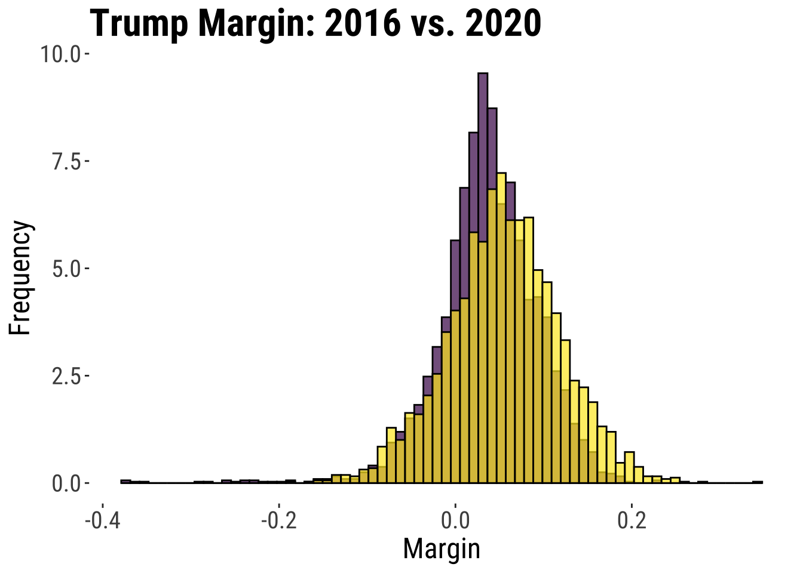
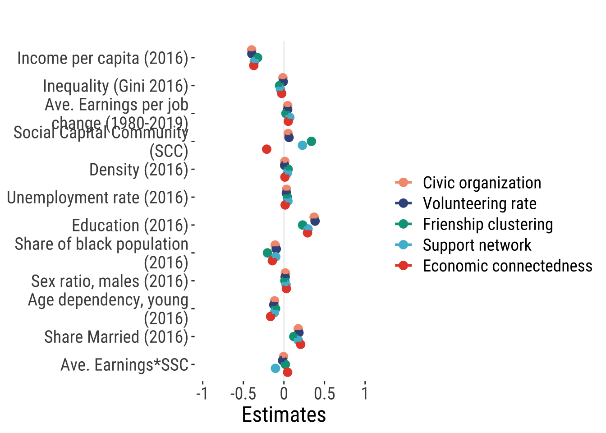
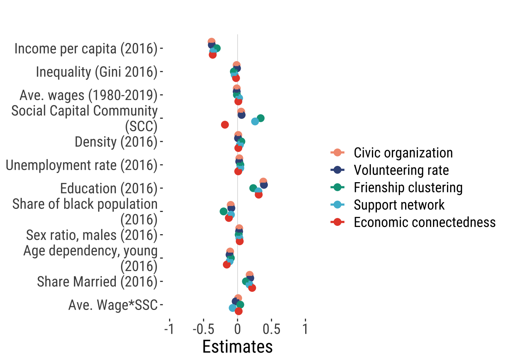

# clean workspace
rm(list=ls())
options(scipen=999, # avoid scientific notation
stringsAsFactors = FALSE, digits = 2)
options(digits = 7)
# load font
font_add_google("Roboto Condensed", "robotocondensed")
# automatically use showtext to render text
showtext_auto()SocCapUS
Set themes
Set font style
Theme for maps
theme_map <- function(...) {
theme_tufte() +
theme(
text = element_text(family = "robotocondensed", size = 30),
strip.text = element_text(size = 30),
# legend
legend.title=element_text(size=20),
legend.text=element_text(size=18),
# remove all axes
axis.text.x = element_blank(),
axis.text.y = element_blank(),
axis.ticks = element_blank(),
legend.position = "right"
)
}Theme for plots
theme_tufte2 <- function(...) {
theme_tufte() +
theme(
text = element_text(family = "robotocondensed", size = 24),
)
}Figure 1 US Presidential Elections 2016 and 2020 (county level)
png(filename = "./output/trump-margin1620.png", units="in", width=8, height=8, res=300, bg = "white")
margin_map
dev.off()quartz_off_screen
2 Figure 2 Histograms of US Presidential Elections 2016 and 2020 (county level)
Warning: The dot-dot notation (`..density..`) was deprecated in ggplot2 3.4.0.
ℹ Please use `after_stat(density)` instead.
png(filename = "./output/hist_trump-margin.png", units="in", width=10, height=8, res=300, bg = "white")
p
dev.off()quartz_off_screen
2 Nonetheless, it’s important to acknowledge that social capital is not a one-dimensional concept. The tendency to view social capital as a single construct stems from practical limitations, particularly the scarcity of detailed data available at the county level. Recently, scholars have introduced a method for measuring distinct dimensions of social capital, including civic engagement, social cohesion, and economic connectedness.
Figure 3 Civic Engagement Dimension
png(filename = "./output/civic-engagement.png", units="in", width=8, height=8, res=300, bg = "white")
map_civorg / map_vol
dev.off()quartz_off_screen
2 Figure 4 Social Cohesion Dimension

png(filename = "./output/social-cohesion.png", units="in", width=8, height=8, res=300, bg = "white")
map_sup / map_clu
dev.off()quartz_off_screen
2 Figure 5 Economic Connectedness Dimension

png(filename = "./output/economic-connectedness.png", units="in", width=8, height=6, res=300, bg = "white")
last_plot()
dev.off()quartz_off_screen
2 As evident from the data, each dimension exhibits unique territorial patterns, which can potentially influence the inclination to endorse anti-establishment narratives in distinct ways. This is the aspect we aim to investigate further.
It can be posited that dimensions linked to homogeneous networks may exhibit a positive correlation with anti-establishment perspectives. Conversely, dimensions associated with heterogeneous networks, signifying diversity, may demonstrate a negative relationship with support for anti-establishment sentiments.
First Part: Replicating Classic Models
Appendix 1 and 2 Classic models for Trump Margin 2016 and 2020
# For 2016 - To report
model16_5 <- lm(MAR_T_new ~ INC_PC_16 + GINI_16 + EMP_AVE_CGR80_19 + SC5_PCM_14 + POP_DEN_16 + UNE_16 + EDU1_16 + R_BLACK_16 + SEX_RATIO + AGE_DEP_YOUNG + MARRIED + factor(S_ID), data = data_trump)
summary(model16_5)
Call:
lm(formula = MAR_T_new ~ INC_PC_16 + GINI_16 + EMP_AVE_CGR80_19 +
SC5_PCM_14 + POP_DEN_16 + UNE_16 + EDU1_16 + R_BLACK_16 +
SEX_RATIO + AGE_DEP_YOUNG + MARRIED + factor(S_ID), data = data_trump)
Residuals:
Min 1Q Median 3Q Max
-0.32235 -0.01965 0.00095 0.02060 0.16003
Coefficients:
Estimate Std. Error t value Pr(>|t|)
(Intercept) 0.11388318709 0.01690403037 6.737 0.000000000019296 ***
INC_PC_16 -0.00000166712 0.00000008177 -20.387 < 0.0000000000000002 ***
GINI_16 -0.08095885490 0.02287540940 -3.539 0.000408 ***
EMP_AVE_CGR80_19 -0.78098987411 0.13245616506 -5.896 0.000000004133070 ***
SC5_PCM_14 0.00881058084 0.00082874490 10.631 < 0.0000000000000002 ***
POP_DEN_16 -0.00000105426 0.00000042451 -2.483 0.013066 *
UNE_16 0.00150249898 0.00056746628 2.648 0.008146 **
EDU1_16 0.00203547425 0.00015421060 13.199 < 0.0000000000000002 ***
R_BLACK_16 -0.00055735201 0.00007529107 -7.403 0.000000000000172 ***
SEX_RATIO 0.00002981684 0.00005987138 0.498 0.618510
AGE_DEP_YOUNG -0.00099261993 0.00013539216 -7.331 0.000000000000291 ***
MARRIED 0.00059092679 0.00010924808 5.409 0.000000068336584 ***
factor(S_ID)AR -0.01220535850 0.00600700926 -2.032 0.042256 *
factor(S_ID)AZ -0.11156945106 0.01061157522 -10.514 < 0.0000000000000002 ***
factor(S_ID)CA -0.04404066884 0.00679084728 -6.485 0.000000000103165 ***
factor(S_ID)CO -0.00967656214 0.00675008898 -1.434 0.151806
factor(S_ID)CT 0.03563675722 0.01345624036 2.648 0.008131 **
factor(S_ID)DC 0.01500773527 0.03592294051 0.418 0.676141
factor(S_ID)DE 0.01490860054 0.02082180707 0.716 0.474041
factor(S_ID)FL -0.00469143219 0.00623868587 -0.752 0.452116
factor(S_ID)GA -0.01237945683 0.00514475770 -2.406 0.016178 *
factor(S_ID)HI 0.02715957497 0.02094375848 1.297 0.194804
factor(S_ID)IA 0.06958807986 0.00619032256 11.241 < 0.0000000000000002 ***
factor(S_ID)ID -0.06684978790 0.00729365281 -9.165 < 0.0000000000000002 ***
factor(S_ID)IL 0.02786698538 0.00593404841 4.696 0.000002770424350 ***
factor(S_ID)IN 0.03914195060 0.00603935376 6.481 0.000000000106003 ***
factor(S_ID)KS -0.02078458715 0.00620043878 -3.352 0.000812 ***
factor(S_ID)KY 0.01613301925 0.00564432418 2.858 0.004289 **
factor(S_ID)LA 0.00227104847 0.00620971825 0.366 0.714596
factor(S_ID)MA -0.00253290860 0.01076570485 -0.235 0.814011
factor(S_ID)MD 0.00835630944 0.00855470562 0.977 0.328743
factor(S_ID)ME 0.02750576345 0.01008649210 2.727 0.006429 **
factor(S_ID)MI 0.03185317747 0.00617566990 5.158 0.000000266013422 ***
factor(S_ID)MN 0.04202251995 0.00644775566 6.517 0.000000000083592 ***
factor(S_ID)MO 0.04266149158 0.00575714175 7.410 0.000000000000163 ***
factor(S_ID)MS 0.00342180511 0.00587263413 0.583 0.560159
factor(S_ID)MT 0.00146797564 0.00703057497 0.209 0.834619
factor(S_ID)NC -0.01070766377 0.00561774221 -1.906 0.056740 .
factor(S_ID)ND 0.05167310535 0.00717721764 7.200 0.000000000000760 ***
factor(S_ID)NE 0.02254550407 0.00636437205 3.542 0.000402 ***
factor(S_ID)NH 0.00862172730 0.01222982669 0.705 0.480880
factor(S_ID)NJ 0.03420411461 0.00911950859 3.751 0.000180 ***
factor(S_ID)NM -0.03572438210 0.00795238936 -4.492 0.000007312107837 ***
factor(S_ID)NV -0.00082385286 0.00987732290 -0.083 0.933532
factor(S_ID)NY 0.08609332107 0.00666170429 12.924 < 0.0000000000000002 ***
factor(S_ID)OH 0.06133729892 0.00606536386 10.113 < 0.0000000000000002 ***
factor(S_ID)OK -0.00601574253 0.00623830664 -0.964 0.334962
factor(S_ID)OR -0.03809082331 0.00770617034 -4.943 0.000000811895914 ***
factor(S_ID)PA 0.02991918730 0.00645952522 4.632 0.000003779123598 ***
factor(S_ID)RI 0.02466857456 0.01653797550 1.492 0.135901
factor(S_ID)SC -0.00585473195 0.00682278582 -0.858 0.390898
factor(S_ID)SD 0.04195517651 0.00685250249 6.123 0.000000001040093 ***
factor(S_ID)TN 0.02232060017 0.00582212282 3.834 0.000129 ***
factor(S_ID)TX -0.02787304875 0.00519463257 -5.366 0.000000086742942 ***
factor(S_ID)UT -0.18021645280 0.00861316521 -20.923 < 0.0000000000000002 ***
factor(S_ID)VA 0.00140988431 0.00574067739 0.246 0.806012
factor(S_ID)VT -0.00560951304 0.01064728243 -0.527 0.598337
factor(S_ID)WA -0.03159726592 0.00748612430 -4.221 0.000025067449578 ***
factor(S_ID)WI 0.03376410835 0.00651984777 5.179 0.000000238216510 ***
factor(S_ID)WV 0.03664026747 0.00668249404 5.483 0.000000045276485 ***
factor(S_ID)WY -0.02107024153 0.00917662659 -2.296 0.021740 *
---
Signif. codes: 0 '***' 0.001 '**' 0.01 '*' 0.05 '.' 0.1 ' ' 1
Residual standard error: 0.03522 on 3005 degrees of freedom
(1 observation deleted due to missingness)
Multiple R-squared: 0.626, Adjusted R-squared: 0.6185
F-statistic: 83.81 on 60 and 3005 DF, p-value: < 0.00000000000000022# Tidy the model and filter to include only SC5_PCM_14 and the intercept
tidy_model_filtered <- tidy(model16_5) %>%
filter(term == "SC5_PCM_14")
tidy_model_filtered$term <- ifelse(tidy_model_filtered$term == "SC5_PCM_14", "2016", tidy_model_filtered$term)
# Create the coefficient plot with updated term labels
ggplot(tidy_model_filtered, aes(x = term, y = estimate)) +
geom_point() +
geom_errorbar(aes(ymin = estimate - std.error, ymax = estimate + std.error), width = 0.2) +
geom_hline(yintercept = 0, linetype = "dashed", color = "red") + # Add horizontal line which becomes vertical after coord_flip
coord_flip() + # Make plot horizontal
labs(title = "Coefficient Plot for 2016 Elections", x = "Term", y = "Estimate") +
theme_minimal()# For 2020 - To report
model20_5 <- lm(MAR_T_20_new ~ INC_PC_16 + GINI_16 + EMP_AVE_CGR80_19 + SC5_PCM_14 + POP_DEN_16 + UNE_16 + EDU1_16 + R_BLACK_16 + SEX_RATIO + AGE_DEP_YOUNG + MARRIED + factor(S_ID), data = data_trump)
summary(model20_5)
Call:
lm(formula = MAR_T_20_new ~ INC_PC_16 + GINI_16 + EMP_AVE_CGR80_19 +
SC5_PCM_14 + POP_DEN_16 + UNE_16 + EDU1_16 + R_BLACK_16 +
SEX_RATIO + AGE_DEP_YOUNG + MARRIED + factor(S_ID), data = data_trump)
Residuals:
Min 1Q Median 3Q Max
-0.202169 -0.024832 -0.000119 0.026061 0.204086
Coefficients:
Estimate Std. Error t value Pr(>|t|)
(Intercept) 0.07769108621 0.02042207962 3.804 0.000145 ***
INC_PC_16 -0.00000218410 0.00000009879 -22.108 < 0.0000000000000002 ***
GINI_16 -0.06743058666 0.02763621587 -2.440 0.014747 *
EMP_AVE_CGR80_19 -0.70448116047 0.16002280468 -4.402 0.00001108030171310 ***
SC5_PCM_14 0.00991430110 0.00100122243 9.902 < 0.0000000000000002 ***
POP_DEN_16 0.00000038655 0.00000051286 0.754 0.451082
UNE_16 0.00114875578 0.00068556677 1.676 0.093915 .
EDU1_16 0.00374913894 0.00018630475 20.124 < 0.0000000000000002 ***
R_BLACK_16 -0.00068453183 0.00009096057 -7.526 0.00000000000006894 ***
SEX_RATIO 0.00012977017 0.00007233175 1.794 0.072898 .
AGE_DEP_YOUNG -0.00084145827 0.00016356983 -5.144 0.00000028570992819 ***
MARRIED 0.00089713719 0.00013198467 6.797 0.00000000001280649 ***
factor(S_ID)AR 0.01500579105 0.00725718179 2.068 0.038752 *
factor(S_ID)AZ -0.03524976317 0.01282004525 -2.750 0.006003 **
factor(S_ID)CA -0.02866053316 0.00820415137 -3.493 0.000484 ***
factor(S_ID)CO -0.00343265106 0.00815491049 -0.421 0.673836
factor(S_ID)CT 0.03775404898 0.01625673914 2.322 0.020280 *
factor(S_ID)DC 0.04975067673 0.04339918561 1.146 0.251741
factor(S_ID)DE -0.00492737837 0.02515521995 -0.196 0.844718
factor(S_ID)FL 0.00590469817 0.00753707469 0.783 0.433442
factor(S_ID)GA -0.02087000584 0.00621547933 -3.358 0.000796 ***
factor(S_ID)HI 0.08299407373 0.02530255177 3.280 0.001050 **
factor(S_ID)IA 0.10637715656 0.00747864607 14.224 < 0.0000000000000002 ***
factor(S_ID)ID -0.00934834096 0.00881160027 -1.061 0.288815
factor(S_ID)IL 0.05560632391 0.00716903641 7.756 0.00000000000001187 ***
factor(S_ID)IN 0.05304312640 0.00729625780 7.270 0.00000000000045655 ***
factor(S_ID)KS -0.00254006103 0.00749086766 -0.339 0.734567
factor(S_ID)KY 0.01243229108 0.00681901507 1.823 0.068375 .
factor(S_ID)LA 0.00690803929 0.00750207837 0.921 0.357220
factor(S_ID)MA 0.00527031893 0.01300625217 0.405 0.685349
factor(S_ID)MD 0.00107119784 0.01033510208 0.104 0.917457
factor(S_ID)ME 0.03967837179 0.01218568237 3.256 0.001142 **
factor(S_ID)MI 0.04638841259 0.00746094391 6.217 0.00000000057503361 ***
factor(S_ID)MN 0.06986791436 0.00778965588 8.969 < 0.0000000000000002 ***
factor(S_ID)MO 0.05480567948 0.00695531211 7.880 0.00000000000000455 ***
factor(S_ID)MS -0.00474646562 0.00709484065 -0.669 0.503545
factor(S_ID)MT 0.01943976904 0.00849377094 2.289 0.022165 *
factor(S_ID)NC -0.00302987302 0.00678690089 -0.446 0.655319
factor(S_ID)ND 0.09134835918 0.00867093273 10.535 < 0.0000000000000002 ***
factor(S_ID)NE 0.04355518150 0.00768891856 5.665 0.00000001612297136 ***
factor(S_ID)NH 0.01713441287 0.01477508553 1.160 0.246270
factor(S_ID)NJ 0.04065430848 0.01101745125 3.690 0.000228 ***
factor(S_ID)NM 0.00849596975 0.00960743239 0.884 0.376598
factor(S_ID)NV 0.03033407553 0.01193298109 2.542 0.011071 *
factor(S_ID)NY 0.09226730867 0.00804813128 11.464 < 0.0000000000000002 ***
factor(S_ID)OH 0.09039079686 0.00732768110 12.336 < 0.0000000000000002 ***
factor(S_ID)OK 0.01181496390 0.00753661655 1.568 0.117062
factor(S_ID)OR -0.01737180915 0.00930997051 -1.866 0.062148 .
factor(S_ID)PA 0.03703944034 0.00780387490 4.746 0.00000216867560038 ***
factor(S_ID)RI 0.02777745541 0.01997984180 1.390 0.164549
factor(S_ID)SC 0.00161691461 0.00824273692 0.196 0.844496
factor(S_ID)SD 0.05716830700 0.00827863820 6.906 0.00000000000607898 ***
factor(S_ID)TN 0.03206388665 0.00703381698 4.559 0.00000535686717690 ***
factor(S_ID)TX -0.01659432846 0.00627573411 -2.644 0.008231 **
factor(S_ID)UT -0.07044814003 0.01040572822 -6.770 0.00000000001541211 ***
factor(S_ID)VA 0.01187231445 0.00693542121 1.712 0.087030 .
factor(S_ID)VT 0.01506288242 0.01286318380 1.171 0.241689
factor(S_ID)WA -0.02418547780 0.00904412872 -2.674 0.007532 **
factor(S_ID)WI 0.06149969209 0.00787675173 7.808 0.00000000000000798 ***
factor(S_ID)WV 0.03852916515 0.00807324777 4.772 0.00000190691401654 ***
factor(S_ID)WY 0.01354573659 0.01108645659 1.222 0.221869
---
Signif. codes: 0 '***' 0.001 '**' 0.01 '*' 0.05 '.' 0.1 ' ' 1
Residual standard error: 0.04255 on 3005 degrees of freedom
(1 observation deleted due to missingness)
Multiple R-squared: 0.5747, Adjusted R-squared: 0.5662
F-statistic: 67.68 on 60 and 3005 DF, p-value: < 0.00000000000000022# Tidy the model and filter to include only SC5_PCM_14 and the intercept
tidy_model20_filtered <- tidy(model20_5) %>%
filter(term == "SC5_PCM_14")
tidy_model20_filtered$term <- ifelse(tidy_model20_filtered$term == "SC5_PCM_14", "2020", tidy_model20_filtered$term)
# Create the coefficient plot with updated term labels
ggplot(tidy_model20_filtered, aes(x = term, y = estimate)) +
geom_point() +
geom_errorbar(aes(ymin = estimate - std.error, ymax = estimate + std.error), width = 0.2) +
geom_hline(yintercept = 0, linetype = "dashed", color = "red") + # Add horizontal line which becomes vertical after coord_flip
coord_flip() + # Make plot horizontal
labs(title = "Coefficient Plot for 2020 Elections", x = "Term", y = "Estimate") +
theme_minimal()# combined
tidy_model1_filtered <-rbind(tidy_model_filtered, tidy_model20_filtered)
# Create the coefficient plot with updated term labels
ggplot(tidy_model1_filtered, aes(x = term, y = estimate)) +
geom_errorbar(aes(colour = term, ymin = estimate - std.error, ymax = estimate + std.error), width = .1, linewidth = 1) +
geom_hline(yintercept = 0, linetype = "dashed", color = "gray50", size = 1) + # Add horizontal line which becomes vertical after coord_flip
geom_point( aes(colour = term), size = 5) +
coord_flip() + # Make plot horizontal
scale_color_aaas() + # Change colour palettes
scale_fill_aaas() +
labs(title = "Comprehensive social capital", x = "Year", y = "Estimate") +
theme_tufte2()Warning: Using `size` aesthetic for lines was deprecated in ggplot2 3.4.0.
ℹ Please use `linewidth` instead.
png(filename = "./output/model1-coef.png", units="in", width=8, height=8, res=300, bg = "white")
last_plot()
dev.off()quartz_off_screen
2 Second Part: Replicating Classic Models with META Data
Figure 6 Correlation Matrix
data_trump3 <- select(data_trump2, MAR_T_new, INC_PC_16, GINI_16, EMP_AVE_CGR80_19, SC5_PCM_14,
civic_organizations_county, volunteering_rate_county, clustering_county,
support_ratio_county, ec_county, POP_DEN_16, UNE_16, EDU1_16, R_BLACK_16,
SEX_RATIO, AGE_DEP_YOUNG, MARRIED)
cormat <- cor(data_trump3, use="complete.obs", method="pearson")
# significance test
sig1 <- corrplot::cor.mtest(data_trump3, conf.level = .95)
colnames(cormat) <- c("trump margin",
"income per capita",
"inequality",
"emp. change",
"social capital community",
"civic organizations",
"volunteering",
"clustering",
"support ratio",
"economic connectedness",
"density",
"unemployment",
"education",
"black population",
"sex ratio",
"age dependency",
"married")
rownames(cormat) <- c("trump margin",
"income per capita",
"inequality",
"emp. change",
"social capital community",
"civic organizations",
"volunteering",
"clustering",
"support ratio",
"economic connectedness",
"density",
"unemployment",
"education",
"black population",
"sex ratio",
"age dependency",
"married")
# creta a correlogram
corrplot::corrplot(cormat, type="lower",
method = "circle",
order = "original",
tl.cex = 0.7,
p.mat = sig1$p, sig.level = .05,
col = viridis::viridis(100, option = "plasma"),
diag = FALSE)Warning in corrplot::corrplot(cormat, type = "lower", method = "circle", :
p.mat and corr may be not paired, their rownames and colnames are not totally
same!
png(filename = "./output/correlagram.png", units="in", width=8, height=6, res=300, bg = "white")
corrplot::corrplot(cormat, type="lower",
method = "circle",
order = "original",
tl.cex = 0.7,
p.mat = sig1$p, sig.level = .05,
col = viridis::viridis(100, option = "plasma"),
diag = FALSE)Warning in corrplot::corrplot(cormat, type = "lower", method = "circle", :
p.mat and corr may be not paired, their rownames and colnames are not totally
same!dev.off()quartz_off_screen
2 Figure 7 Scatter plot for Trump Margin and Social Capital (classic and differentiating)
Warning: The `<scale>` argument of `guides()` cannot be `FALSE`. Use "none" instead as
of ggplot2 3.3.4.`geom_smooth()` using formula = 'y ~ x'Warning: The following aesthetics were dropped during statistical transformation: size
ℹ This can happen when ggplot fails to infer the correct grouping structure in
the data.
ℹ Did you forget to specify a `group` aesthetic or to convert a numerical
variable into a factor?Warning: Removed 1 rows containing missing values (`geom_point()`).`geom_smooth()` using formula = 'y ~ x'Warning: The following aesthetics were dropped during statistical transformation: size
ℹ This can happen when ggplot fails to infer the correct grouping structure in
the data.
ℹ Did you forget to specify a `group` aesthetic or to convert a numerical
variable into a factor?
Removed 1 rows containing missing values (`geom_point()`).
`geom_smooth()` using formula = 'y ~ x'Warning: The following aesthetics were dropped during statistical transformation: size
ℹ This can happen when ggplot fails to infer the correct grouping structure in
the data.
ℹ Did you forget to specify a `group` aesthetic or to convert a numerical
variable into a factor?
Removed 1 rows containing missing values (`geom_point()`).
`geom_smooth()` using formula = 'y ~ x'Warning: The following aesthetics were dropped during statistical transformation: size
ℹ This can happen when ggplot fails to infer the correct grouping structure in
the data.
ℹ Did you forget to specify a `group` aesthetic or to convert a numerical
variable into a factor?
Removed 1 rows containing missing values (`geom_point()`).
`geom_smooth()` using formula = 'y ~ x'Warning: The following aesthetics were dropped during statistical transformation: size
ℹ This can happen when ggplot fails to infer the correct grouping structure in
the data.
ℹ Did you forget to specify a `group` aesthetic or to convert a numerical
variable into a factor?
Removed 1 rows containing missing values (`geom_point()`).`geom_smooth()` using formula = 'y ~ x'Warning: Removed 66 rows containing non-finite values (`stat_smooth()`).Warning: The following aesthetics were dropped during statistical transformation: size
ℹ This can happen when ggplot fails to infer the correct grouping structure in
the data.
ℹ Did you forget to specify a `group` aesthetic or to convert a numerical
variable into a factor?Warning: Removed 67 rows containing missing values (`geom_point()`).Note: All models consider population density (size of circles)
Table 1 Basic model for Trump Margin 2016, with META data
# Civic Engagement
modelnew16_1 <- data_trump2 %>% rename(
social_community = civic_organizations_county
) %>%
lm(MAR_T_new ~ INC_PC_16 + GINI_16 + EMP_AVE_CGR80_19 + social_community + POP_DEN_16 + UNE_16 + EDU1_16 + R_BLACK_16 + SEX_RATIO + AGE_DEP_YOUNG + MARRIED + factor(S_ID), data = .)
summary(modelnew16_1)
Call:
lm(formula = MAR_T_new ~ INC_PC_16 + GINI_16 + EMP_AVE_CGR80_19 +
social_community + POP_DEN_16 + UNE_16 + EDU1_16 + R_BLACK_16 +
SEX_RATIO + AGE_DEP_YOUNG + MARRIED + factor(S_ID), data = .)
Residuals:
Min 1Q Median 3Q Max
-0.33190 -0.01978 0.00045 0.01985 0.16487
Coefficients:
Estimate Std. Error t value Pr(>|t|)
(Intercept) 0.03331353161 0.01980910097 1.682 0.092727 .
INC_PC_16 -0.00000164757 0.00000008468 -19.456 < 0.0000000000000002 ***
GINI_16 -0.02592144349 0.02439326639 -1.063 0.288029
EMP_AVE_CGR80_19 -0.85561723762 0.13476229083 -6.349 0.0000000002498828 ***
social_community 0.42094637349 0.08006020783 5.258 0.0000001561182054 ***
POP_DEN_16 -0.00000105886 0.00000042560 -2.488 0.012904 *
UNE_16 0.00135812854 0.00057917317 2.345 0.019096 *
EDU1_16 0.00200718752 0.00016154672 12.425 < 0.0000000000000002 ***
R_BLACK_16 -0.00030041028 0.00008034855 -3.739 0.000188 ***
SEX_RATIO 0.00004260124 0.00006180316 0.689 0.490685
AGE_DEP_YOUNG -0.00109663214 0.00014398669 -7.616 0.0000000000000349 ***
MARRIED 0.00141596445 0.00016161079 8.762 < 0.0000000000000002 ***
factor(S_ID)AR -0.00927116153 0.00599992086 -1.545 0.122402
factor(S_ID)AZ -0.11119931123 0.01063357858 -10.457 < 0.0000000000000002 ***
factor(S_ID)CA -0.03862962476 0.00684569646 -5.643 0.0000000183033960 ***
factor(S_ID)CO -0.00325953036 0.00677067867 -0.481 0.630255
factor(S_ID)CT 0.04020734692 0.01347040250 2.985 0.002860 **
factor(S_ID)DC 0.04366926509 0.03585775020 1.218 0.223379
factor(S_ID)DE 0.01604185358 0.02080503373 0.771 0.440735
factor(S_ID)FL -0.00173145112 0.00624561816 -0.277 0.781626
factor(S_ID)GA -0.01174358327 0.00514066832 -2.284 0.022416 *
factor(S_ID)HI 0.02888467919 0.02094323545 1.379 0.167941
factor(S_ID)IA 0.08251906982 0.00610198584 13.523 < 0.0000000000000002 ***
factor(S_ID)ID -0.06455586560 0.00735625468 -8.776 < 0.0000000000000002 ***
factor(S_ID)IL 0.03708797735 0.00590792789 6.278 0.0000000003940835 ***
factor(S_ID)IN 0.04378675258 0.00606452969 7.220 0.0000000000006575 ***
factor(S_ID)KS -0.00831855621 0.00612499000 -1.358 0.174525
factor(S_ID)KY 0.01405461575 0.00564032668 2.492 0.012764 *
factor(S_ID)LA 0.00408295048 0.00621077083 0.657 0.510976
factor(S_ID)MA 0.00620325620 0.01081668504 0.573 0.566357
factor(S_ID)MD 0.01298640600 0.00856655632 1.516 0.129641
factor(S_ID)ME 0.03295959925 0.01009974808 3.263 0.001113 **
factor(S_ID)MI 0.03502598962 0.00619044511 5.658 0.0000000167734284 ***
factor(S_ID)MN 0.05998473111 0.00626204308 9.579 < 0.0000000000000002 ***
factor(S_ID)MO 0.04797384172 0.00576746210 8.318 < 0.0000000000000002 ***
factor(S_ID)MS 0.00429603974 0.00588355614 0.730 0.465340
factor(S_ID)MT 0.01343298961 0.00705757192 1.903 0.057093 .
factor(S_ID)NC -0.01056350120 0.00561953822 -1.880 0.060236 .
factor(S_ID)ND 0.06724057815 0.00712246536 9.441 < 0.0000000000000002 ***
factor(S_ID)NE 0.03076160123 0.00639812155 4.808 0.0000016014373939 ***
factor(S_ID)NH 0.01701504632 0.01223874149 1.390 0.164554
factor(S_ID)NJ 0.03598651710 0.00912738922 3.943 0.0000824405839839 ***
factor(S_ID)NM -0.02889703830 0.00814663589 -3.547 0.000396 ***
factor(S_ID)NV 0.00144896481 0.01012498309 0.143 0.886215
factor(S_ID)NY 0.09070781047 0.00671379457 13.511 < 0.0000000000000002 ***
factor(S_ID)OH 0.06871892540 0.00606782860 11.325 < 0.0000000000000002 ***
factor(S_ID)OK -0.00077205558 0.00624804338 -0.124 0.901666
factor(S_ID)OR -0.02645178965 0.00765104239 -3.457 0.000553 ***
factor(S_ID)PA 0.03773732355 0.00647012202 5.833 0.0000000060497036 ***
factor(S_ID)RI 0.03015510167 0.01654577316 1.823 0.068476 .
factor(S_ID)SC -0.00368925829 0.00681434593 -0.541 0.588276
factor(S_ID)SD 0.05650434313 0.00676487557 8.353 < 0.0000000000000002 ***
factor(S_ID)TN 0.01908647316 0.00580906493 3.286 0.001029 **
factor(S_ID)TX -0.02535295836 0.00522752684 -4.850 0.0000012991989597 ***
factor(S_ID)UT -0.18558250301 0.00866509349 -21.417 < 0.0000000000000002 ***
factor(S_ID)VA 0.00887853288 0.00594802549 1.493 0.135626
factor(S_ID)VT 0.00165868560 0.01067749485 0.155 0.876561
factor(S_ID)WA -0.02319020316 0.00748952863 -3.096 0.001978 **
factor(S_ID)WI 0.04431879415 0.00647856976 6.841 0.0000000000095318 ***
factor(S_ID)WV 0.03800526244 0.00669000378 5.681 0.0000000147020766 ***
factor(S_ID)WY -0.00142548336 0.00901502107 -0.158 0.874371
---
Signif. codes: 0 '***' 0.001 '**' 0.01 '*' 0.05 '.' 0.1 ' ' 1
Residual standard error: 0.03519 on 2955 degrees of freedom
(1 observation deleted due to missingness)
Multiple R-squared: 0.6275, Adjusted R-squared: 0.62
F-statistic: 82.98 on 60 and 2955 DF, p-value: < 0.00000000000000022modelnew16_2 <- data_trump2 %>% rename(
social_community = volunteering_rate_county
) %>%
lm(MAR_T_new ~ INC_PC_16 + GINI_16 + EMP_AVE_CGR80_19 + social_community + POP_DEN_16 + UNE_16 + EDU1_16 + R_BLACK_16 + SEX_RATIO + AGE_DEP_YOUNG + MARRIED + factor(S_ID), data = .)
summary(modelnew16_2)
Call:
lm(formula = MAR_T_new ~ INC_PC_16 + GINI_16 + EMP_AVE_CGR80_19 +
social_community + POP_DEN_16 + UNE_16 + EDU1_16 + R_BLACK_16 +
SEX_RATIO + AGE_DEP_YOUNG + MARRIED + factor(S_ID), data = .)
Residuals:
Min 1Q Median 3Q Max
-0.34354 -0.01924 0.00034 0.02048 0.16383
Coefficients:
Estimate Std. Error t value Pr(>|t|)
(Intercept) 0.02769674538 0.01989225158 1.392 0.163925
INC_PC_16 -0.00000163701 0.00000008483 -19.297 < 0.0000000000000002 ***
GINI_16 -0.01815668025 0.02432500608 -0.746 0.455473
EMP_AVE_CGR80_19 -0.81550341943 0.13473274690 -6.053 0.00000000160343636 ***
social_community 0.11690442094 0.02405344545 4.860 0.00000123390921812 ***
POP_DEN_16 -0.00000115477 0.00000042521 -2.716 0.006651 **
UNE_16 0.00128692872 0.00057969941 2.220 0.026495 *
EDU1_16 0.00212039233 0.00016430711 12.905 < 0.0000000000000002 ***
R_BLACK_16 -0.00023819197 0.00008131748 -2.929 0.003425 **
SEX_RATIO 0.00003125208 0.00006187619 0.505 0.613544
AGE_DEP_YOUNG -0.00122073964 0.00013956535 -8.747 < 0.0000000000000002 ***
MARRIED 0.00152046467 0.00015959318 9.527 < 0.0000000000000002 ***
factor(S_ID)AR -0.01164386547 0.00603360290 -1.930 0.053723 .
factor(S_ID)AZ -0.11019479731 0.01063660634 -10.360 < 0.0000000000000002 ***
factor(S_ID)CA -0.03892710417 0.00685735726 -5.677 0.00000001506445683 ***
factor(S_ID)CO 0.00039312055 0.00671437315 0.059 0.953315
factor(S_ID)CT 0.03969072736 0.01348060104 2.944 0.003262 **
factor(S_ID)DC 0.04869439831 0.03583801617 1.359 0.174334
factor(S_ID)DE 0.01628927271 0.02081882922 0.782 0.434025
factor(S_ID)FL -0.00216797318 0.00624988254 -0.347 0.728704
factor(S_ID)GA -0.01201371427 0.00514622152 -2.334 0.019638 *
factor(S_ID)HI 0.02738538579 0.02096531813 1.306 0.191578
factor(S_ID)IA 0.08201649891 0.00611759953 13.407 < 0.0000000000000002 ***
factor(S_ID)ID -0.06569160242 0.00738971573 -8.890 < 0.0000000000000002 ***
factor(S_ID)IL 0.03458849962 0.00595126096 5.812 0.00000000683356496 ***
factor(S_ID)IN 0.04068241253 0.00613393423 6.632 0.00000000003913694 ***
factor(S_ID)KS -0.00860943572 0.00615177724 -1.400 0.161767
factor(S_ID)KY 0.01269816956 0.00564964398 2.248 0.024675 *
factor(S_ID)LA 0.00061850101 0.00624526143 0.099 0.921117
factor(S_ID)MA 0.00645802919 0.01082325542 0.597 0.550766
factor(S_ID)MD 0.01290221115 0.00857442958 1.505 0.132500
factor(S_ID)ME 0.03335044116 0.01010467942 3.300 0.000977 ***
factor(S_ID)MI 0.02965550363 0.00636994883 4.656 0.00000337390722286 ***
factor(S_ID)MN 0.06145434018 0.00625148311 9.830 < 0.0000000000000002 ***
factor(S_ID)MO 0.04599073745 0.00582292117 7.898 0.00000000000000395 ***
factor(S_ID)MS 0.00248417113 0.00589622235 0.421 0.673555
factor(S_ID)MT 0.01579122030 0.00701837754 2.250 0.024523 *
factor(S_ID)NC -0.00951085620 0.00561653400 -1.693 0.090491 .
factor(S_ID)ND 0.06788814463 0.00712140242 9.533 < 0.0000000000000002 ***
factor(S_ID)NE 0.03117435361 0.00639939513 4.871 0.00000116614996823 ***
factor(S_ID)NH 0.01842290397 0.01224053223 1.505 0.132412
factor(S_ID)NJ 0.03490629164 0.00913557749 3.821 0.000136 ***
factor(S_ID)NM -0.02544284044 0.00811432028 -3.136 0.001732 **
factor(S_ID)NV -0.00020441250 0.01014675442 -0.020 0.983929
factor(S_ID)NY 0.09094738435 0.00671733607 13.539 < 0.0000000000000002 ***
factor(S_ID)OH 0.06634073155 0.00610458264 10.867 < 0.0000000000000002 ***
factor(S_ID)OK -0.00520451022 0.00636363826 -0.818 0.413508
factor(S_ID)OR -0.02636912429 0.00765992364 -3.442 0.000584 ***
factor(S_ID)PA 0.03737324633 0.00647717366 5.770 0.00000000874905235 ***
factor(S_ID)RI 0.02976436029 0.01655680306 1.798 0.072325 .
factor(S_ID)SC -0.00326562021 0.00681860209 -0.479 0.632025
factor(S_ID)SD 0.05811817579 0.00674616167 8.615 < 0.0000000000000002 ***
factor(S_ID)TN 0.01697251517 0.00582307608 2.915 0.003587 **
factor(S_ID)TX -0.02563116289 0.00523827287 -4.893 0.00000104603008602 ***
factor(S_ID)UT -0.18312982634 0.00864423932 -21.185 < 0.0000000000000002 ***
factor(S_ID)VA 0.00860485444 0.00596100234 1.444 0.148979
factor(S_ID)VT 0.00406647590 0.01066281788 0.381 0.702956
factor(S_ID)WA -0.02308221657 0.00749687371 -3.079 0.002097 **
factor(S_ID)WI 0.04367460866 0.00649416516 6.725 0.00000000002096796 ***
factor(S_ID)WV 0.03393392196 0.00673596742 5.038 0.00000049943640121 ***
factor(S_ID)WY -0.00007052636 0.00900187944 -0.008 0.993749
---
Signif. codes: 0 '***' 0.001 '**' 0.01 '*' 0.05 '.' 0.1 ' ' 1
Residual standard error: 0.03521 on 2955 degrees of freedom
(1 observation deleted due to missingness)
Multiple R-squared: 0.627, Adjusted R-squared: 0.6195
F-statistic: 82.8 on 60 and 2955 DF, p-value: < 0.00000000000000022# Social Cohesion
modelnew16_3 <- data_trump2 %>% rename(
social_community = clustering_county
) %>%
lm(MAR_T_new ~ INC_PC_16 + GINI_16 + EMP_AVE_CGR80_19 + social_community + POP_DEN_16 + UNE_16 + EDU1_16 + R_BLACK_16 + SEX_RATIO + AGE_DEP_YOUNG + MARRIED + factor(S_ID), data = .)
summary(modelnew16_3)
Call:
lm(formula = MAR_T_new ~ INC_PC_16 + GINI_16 + EMP_AVE_CGR80_19 +
social_community + POP_DEN_16 + UNE_16 + EDU1_16 + R_BLACK_16 +
SEX_RATIO + AGE_DEP_YOUNG + MARRIED + factor(S_ID), data = .)
Residuals:
Min 1Q Median 3Q Max
-0.32523 -0.01869 0.00100 0.01973 0.15408
Coefficients:
Estimate Std. Error t value Pr(>|t|)
(Intercept) -0.004770858708 0.018833214126 -0.253 0.800037
INC_PC_16 -0.000001379695 0.000000081278 -16.975 < 0.0000000000000002
GINI_16 -0.076103543779 0.023180204162 -3.283 0.001039
EMP_AVE_CGR80_19 -0.817093048074 0.127254345480 -6.421 0.000000000157245309
social_community 0.802171294260 0.040965740557 19.582 < 0.0000000000000002
POP_DEN_16 0.000000000636 0.000000406166 0.002 0.998751
UNE_16 0.001739388840 0.000547802697 3.175 0.001513
EDU1_16 0.000937519419 0.000161507169 5.805 0.000000007128020273
R_BLACK_16 -0.000600154568 0.000077502627 -7.744 0.000000000000013171
SEX_RATIO 0.000009358355 0.000058438592 0.160 0.872782
AGE_DEP_YOUNG -0.001100051038 0.000131202242 -8.384 < 0.0000000000000002
MARRIED 0.001097700691 0.000152392076 7.203 0.000000000000743392
factor(S_ID)AR -0.009197009672 0.005670301534 -1.622 0.104918
factor(S_ID)AZ -0.097058749915 0.010065839448 -9.642 < 0.0000000000000002
factor(S_ID)CA -0.025468997384 0.006480452546 -3.930 0.000086847550180047
factor(S_ID)CO 0.007054926957 0.006342930756 1.112 0.266121
factor(S_ID)CT 0.038383548759 0.012732691635 3.015 0.002595
factor(S_ID)DC 0.067794817740 0.033830330739 2.004 0.045165
factor(S_ID)DE 0.033926749507 0.019683910406 1.724 0.084889
factor(S_ID)FL 0.012576243316 0.005949684868 2.114 0.034619
factor(S_ID)GA -0.004671483367 0.004868451087 -0.960 0.337364
factor(S_ID)HI 0.029445872681 0.019793449490 1.488 0.136948
factor(S_ID)IA 0.070638617257 0.005798269304 12.183 < 0.0000000000000002
factor(S_ID)ID -0.057245364721 0.006933120932 -8.257 0.000000000000000223
factor(S_ID)IL 0.026318010564 0.005613630702 4.688 0.000002880599387466
factor(S_ID)IN 0.041271454841 0.005730029414 7.203 0.000000000000745941
factor(S_ID)KS -0.011497675940 0.005734833196 -2.005 0.045066
factor(S_ID)KY 0.011841043143 0.005332302022 2.221 0.026452
factor(S_ID)LA 0.002747719759 0.005870114150 0.468 0.639757
factor(S_ID)MA 0.002275372230 0.010222104773 0.223 0.823867
factor(S_ID)MD 0.019008059857 0.008092770271 2.349 0.018901
factor(S_ID)ME 0.025783714645 0.009546262135 2.701 0.006954
factor(S_ID)MI 0.030590028917 0.005848624745 5.230 0.000000181052355099
factor(S_ID)MN 0.049598930584 0.005938129516 8.353 < 0.0000000000000002
factor(S_ID)MO 0.046972123170 0.005437584857 8.638 < 0.0000000000000002
factor(S_ID)MS -0.001551778892 0.005568408658 -0.279 0.780513
factor(S_ID)MT 0.008479678147 0.006628256309 1.279 0.200884
factor(S_ID)NC -0.002158374856 0.005315906512 -0.406 0.684756
factor(S_ID)ND 0.056524785236 0.006750274335 8.374 < 0.0000000000000002
factor(S_ID)NE 0.027220539885 0.006023246492 4.519 0.000006449652603542
factor(S_ID)NH 0.015117532341 0.011562766985 1.307 0.191168
factor(S_ID)NJ 0.035691210569 0.008627287774 4.137 0.000036167098198389
factor(S_ID)NM -0.020519992444 0.007666182068 -2.677 0.007476
factor(S_ID)NV 0.005775676880 0.009568823533 0.604 0.546160
factor(S_ID)NY 0.088465267631 0.006338794548 13.956 < 0.0000000000000002
factor(S_ID)OH 0.068546819822 0.005733924857 11.955 < 0.0000000000000002
factor(S_ID)OK 0.005504129102 0.005904693487 0.932 0.351329
factor(S_ID)OR -0.018137476615 0.007205620852 -2.517 0.011884
factor(S_ID)PA 0.033541432013 0.006119238037 5.481 0.000000045774199319
factor(S_ID)RI 0.029736704699 0.015639130703 1.901 0.057343
factor(S_ID)SC 0.000835131754 0.006444167281 0.130 0.896896
factor(S_ID)SD 0.047312145117 0.006393092108 7.401 0.000000000000175905
factor(S_ID)TN 0.020860850811 0.005491441540 3.799 0.000148
factor(S_ID)TX -0.013583176919 0.004952945524 -2.742 0.006135
factor(S_ID)UT -0.182433927721 0.008160364289 -22.356 < 0.0000000000000002
factor(S_ID)VA 0.012562077365 0.005602388616 2.242 0.025018
factor(S_ID)VT -0.001802841088 0.010074406721 -0.179 0.857987
factor(S_ID)WA -0.016355254728 0.007057971869 -2.317 0.020557
factor(S_ID)WI 0.037261377210 0.006130988586 6.078 0.000000001376774936
factor(S_ID)WV 0.028667959826 0.006339376231 4.522 0.000006360764342396
factor(S_ID)WY -0.001389620628 0.008476200321 -0.164 0.869787
(Intercept)
INC_PC_16 ***
GINI_16 **
EMP_AVE_CGR80_19 ***
social_community ***
POP_DEN_16
UNE_16 **
EDU1_16 ***
R_BLACK_16 ***
SEX_RATIO
AGE_DEP_YOUNG ***
MARRIED ***
factor(S_ID)AR
factor(S_ID)AZ ***
factor(S_ID)CA ***
factor(S_ID)CO
factor(S_ID)CT **
factor(S_ID)DC *
factor(S_ID)DE .
factor(S_ID)FL *
factor(S_ID)GA
factor(S_ID)HI
factor(S_ID)IA ***
factor(S_ID)ID ***
factor(S_ID)IL ***
factor(S_ID)IN ***
factor(S_ID)KS *
factor(S_ID)KY *
factor(S_ID)LA
factor(S_ID)MA
factor(S_ID)MD *
factor(S_ID)ME **
factor(S_ID)MI ***
factor(S_ID)MN ***
factor(S_ID)MO ***
factor(S_ID)MS
factor(S_ID)MT
factor(S_ID)NC
factor(S_ID)ND ***
factor(S_ID)NE ***
factor(S_ID)NH
factor(S_ID)NJ ***
factor(S_ID)NM **
factor(S_ID)NV
factor(S_ID)NY ***
factor(S_ID)OH ***
factor(S_ID)OK
factor(S_ID)OR *
factor(S_ID)PA ***
factor(S_ID)RI .
factor(S_ID)SC
factor(S_ID)SD ***
factor(S_ID)TN ***
factor(S_ID)TX **
factor(S_ID)UT ***
factor(S_ID)VA *
factor(S_ID)VT
factor(S_ID)WA *
factor(S_ID)WI ***
factor(S_ID)WV ***
factor(S_ID)WY
---
Signif. codes: 0 '***' 0.001 '**' 0.01 '*' 0.05 '.' 0.1 ' ' 1
Residual standard error: 0.03326 on 2955 degrees of freedom
(1 observation deleted due to missingness)
Multiple R-squared: 0.6672, Adjusted R-squared: 0.6605
F-statistic: 98.76 on 60 and 2955 DF, p-value: < 0.00000000000000022modelnew16_4 <- data_trump2 %>% rename(
social_community = support_ratio_county
) %>%
lm(MAR_T_new ~ INC_PC_16 + GINI_16 + EMP_AVE_CGR80_19 + social_community + POP_DEN_16 + UNE_16 + EDU1_16 + R_BLACK_16 + SEX_RATIO + AGE_DEP_YOUNG + MARRIED + factor(S_ID), data = .)
summary(modelnew16_4)
Call:
lm(formula = MAR_T_new ~ INC_PC_16 + GINI_16 + EMP_AVE_CGR80_19 +
social_community + POP_DEN_16 + UNE_16 + EDU1_16 + R_BLACK_16 +
SEX_RATIO + AGE_DEP_YOUNG + MARRIED + factor(S_ID), data = .)
Residuals:
Min 1Q Median 3Q Max
-0.303964 -0.018566 0.000009 0.018761 0.248357
Coefficients:
Estimate Std. Error t value Pr(>|t|)
(Intercept) -0.64960055332 0.05281191533 -12.300 < 0.0000000000000002 ***
INC_PC_16 -0.00000146659 0.00000008353 -17.558 < 0.0000000000000002 ***
GINI_16 -0.06477153458 0.02391731468 -2.708 0.006805 **
EMP_AVE_CGR80_19 -0.45027314174 0.13372941262 -3.367 0.000769 ***
social_community 0.70918034796 0.05084551189 13.948 < 0.0000000000000002 ***
POP_DEN_16 0.00000006373 0.00000042312 0.151 0.880278
UNE_16 0.00192645469 0.00056513779 3.409 0.000661 ***
EDU1_16 0.00154886384 0.00016002457 9.679 < 0.0000000000000002 ***
R_BLACK_16 -0.00030420323 0.00007819024 -3.891 0.000102 ***
SEX_RATIO 0.00008457208 0.00006022391 1.404 0.160336
AGE_DEP_YOUNG -0.00123756972 0.00013473374 -9.185 < 0.0000000000000002 ***
MARRIED 0.00143702662 0.00015525289 9.256 < 0.0000000000000002 ***
factor(S_ID)AR -0.00904962923 0.00583786196 -1.550 0.121210
factor(S_ID)AZ -0.10294659838 0.01035330448 -9.943 < 0.0000000000000002 ***
factor(S_ID)CA -0.02745236601 0.00667776968 -4.111 0.000040466261811 ***
factor(S_ID)CO 0.00668035918 0.00653404695 1.022 0.306679
factor(S_ID)CT 0.03974100624 0.01310858443 3.032 0.002453 **
factor(S_ID)DC 0.06322204977 0.03482843656 1.815 0.069588 .
factor(S_ID)DE 0.01514457470 0.02024610397 0.748 0.454505
factor(S_ID)FL 0.00298297676 0.00608800847 0.490 0.624187
factor(S_ID)GA -0.00463058028 0.00502226710 -0.922 0.356599
factor(S_ID)HI 0.02772258279 0.02037933244 1.360 0.173830
factor(S_ID)IA 0.07873307030 0.00593893182 13.257 < 0.0000000000000002 ***
factor(S_ID)ID -0.05947739559 0.00713599386 -8.335 < 0.0000000000000002 ***
factor(S_ID)IL 0.03411505795 0.00575349652 5.929 0.000000003391627 ***
factor(S_ID)IN 0.04308872771 0.00589768473 7.306 0.000000000000352 ***
factor(S_ID)KS -0.00871982166 0.00590132861 -1.478 0.139621
factor(S_ID)KY 0.01534078085 0.00548974196 2.794 0.005232 **
factor(S_ID)LA 0.00239748973 0.00604405361 0.397 0.691640
factor(S_ID)MA 0.00634910316 0.01052038889 0.604 0.546219
factor(S_ID)MD 0.01468156770 0.00832911155 1.763 0.078058 .
factor(S_ID)ME 0.03303013549 0.00981621812 3.365 0.000776 ***
factor(S_ID)MI 0.03492429149 0.00601371705 5.807 0.000000007018551 ***
factor(S_ID)MN 0.06084936813 0.00607690796 10.013 < 0.0000000000000002 ***
factor(S_ID)MO 0.05160621828 0.00559620967 9.222 < 0.0000000000000002 ***
factor(S_ID)MS 0.00322203728 0.00572568825 0.563 0.573659
factor(S_ID)MT 0.01436168156 0.00681023082 2.109 0.035042 *
factor(S_ID)NC -0.00599917895 0.00546539060 -1.098 0.272439
factor(S_ID)ND 0.06399897013 0.00692706370 9.239 < 0.0000000000000002 ***
factor(S_ID)NE 0.02900997281 0.00620179544 4.678 0.000003031794855 ***
factor(S_ID)NH 0.02026457228 0.01190260106 1.703 0.088761 .
factor(S_ID)NJ 0.03597988374 0.00888223593 4.051 0.000052363296603 ***
factor(S_ID)NM -0.02374193659 0.00788996749 -3.009 0.002642 **
factor(S_ID)NV 0.01654584916 0.00990006261 1.671 0.094771 .
factor(S_ID)NY 0.08819847579 0.00653044682 13.506 < 0.0000000000000002 ***
factor(S_ID)OH 0.06764710871 0.00590463597 11.457 < 0.0000000000000002 ***
factor(S_ID)OK 0.00029872197 0.00607405233 0.049 0.960779
factor(S_ID)OR -0.01986879908 0.00741747717 -2.679 0.007433 **
factor(S_ID)PA 0.03462789846 0.00630084222 5.496 0.000000042214547 ***
factor(S_ID)RI 0.02909546234 0.01610136412 1.807 0.070861 .
factor(S_ID)SC -0.00255193816 0.00663122731 -0.385 0.700386
factor(S_ID)SD 0.05487973269 0.00655809826 8.368 < 0.0000000000000002 ***
factor(S_ID)TN 0.02123292462 0.00565552062 3.754 0.000177 ***
factor(S_ID)TX -0.02095359643 0.00507633169 -4.128 0.000037653694535 ***
factor(S_ID)UT -0.18426408967 0.00840346024 -21.927 < 0.0000000000000002 ***
factor(S_ID)VA 0.01649986019 0.00577874619 2.855 0.004330 **
factor(S_ID)VT 0.00339536380 0.01036599440 0.328 0.743276
factor(S_ID)WA -0.01618290535 0.00726913663 -2.226 0.026073 *
factor(S_ID)WI 0.04299571241 0.00629877411 6.826 0.000000000010550 ***
factor(S_ID)WV 0.03609817069 0.00651073446 5.544 0.000000032095777 ***
factor(S_ID)WY -0.00481247933 0.00874370136 -0.550 0.582091
---
Signif. codes: 0 '***' 0.001 '**' 0.01 '*' 0.05 '.' 0.1 ' ' 1
Residual standard error: 0.03424 on 2955 degrees of freedom
(1 observation deleted due to missingness)
Multiple R-squared: 0.6473, Adjusted R-squared: 0.6401
F-statistic: 90.38 on 60 and 2955 DF, p-value: < 0.00000000000000022# Economic Connectedness
modelnew16_5 <- data_trump2 %>% rename(
social_community = ec_county
) %>%
lm(MAR_T_new ~ INC_PC_16 + GINI_16 + EMP_AVE_CGR80_19 + social_community + POP_DEN_16 + UNE_16 + EDU1_16 + R_BLACK_16 + SEX_RATIO + AGE_DEP_YOUNG + MARRIED + factor(S_ID), data = .)
summary(modelnew16_5)
Call:
lm(formula = MAR_T_new ~ INC_PC_16 + GINI_16 + EMP_AVE_CGR80_19 +
social_community + POP_DEN_16 + UNE_16 + EDU1_16 + R_BLACK_16 +
SEX_RATIO + AGE_DEP_YOUNG + MARRIED + factor(S_ID), data = .)
Residuals:
Min 1Q Median 3Q Max
-0.295248 -0.019146 0.000111 0.020822 0.151276
Coefficients:
Estimate Std. Error t value Pr(>|t|)
(Intercept) 0.12471884896 0.02139333308 5.830 0.00000000616349843 ***
INC_PC_16 -0.00000144637 0.00000008576 -16.865 < 0.0000000000000002 ***
GINI_16 -0.06432516700 0.02483227096 -2.590 0.009635 **
EMP_AVE_CGR80_19 -0.73923126011 0.13345947793 -5.539 0.00000003315660479 ***
social_community -0.09551123278 0.00818902776 -11.663 < 0.0000000000000002 ***
POP_DEN_16 -0.00000094337 0.00000041530 -2.272 0.023187 *
UNE_16 -0.00005508763 0.00061928045 -0.089 0.929124
EDU1_16 0.00111883281 0.00018584534 6.020 0.00000000196150408 ***
R_BLACK_16 -0.00044381984 0.00008194100 -5.416 0.00000006583136707 ***
SEX_RATIO 0.00009204707 0.00006331997 1.454 0.146143
AGE_DEP_YOUNG -0.00172199121 0.00014186637 -12.138 < 0.0000000000000002 ***
MARRIED 0.00198719774 0.00016487041 12.053 < 0.0000000000000002 ***
factor(S_ID)AR -0.00417911333 0.00588282974 -0.710 0.477519
factor(S_ID)AZ -0.10404453929 0.01040213671 -10.002 < 0.0000000000000002 ***
factor(S_ID)CA -0.02793290086 0.00676208574 -4.131 0.00003717435641155 ***
factor(S_ID)CO 0.01381038766 0.00676063551 2.043 0.041166 *
factor(S_ID)CT 0.05422825696 0.01319514623 4.110 0.00004071754444911 ***
factor(S_ID)DC 0.08622146939 0.03498339887 2.465 0.013773 *
factor(S_ID)DE 0.02269243728 0.02029428000 1.118 0.263588
factor(S_ID)FL -0.00413747777 0.00611853022 -0.676 0.498955
factor(S_ID)GA -0.01113952494 0.00509383743 -2.187 0.028832 *
factor(S_ID)HI 0.05254108227 0.02050727210 2.562 0.010455 *
factor(S_ID)IA 0.10013503049 0.00610083149 16.413 < 0.0000000000000002 ***
factor(S_ID)ID -0.05331560712 0.00725895270 -7.345 0.00000000000026668 ***
factor(S_ID)IL 0.04551749269 0.00582403181 7.815 0.00000000000000761 ***
factor(S_ID)IN 0.05115066954 0.00596366125 8.577 < 0.0000000000000002 ***
factor(S_ID)KS 0.00986410827 0.00603377549 1.635 0.102197
factor(S_ID)KY 0.02991562525 0.00569963553 5.249 0.00000016428078515 ***
factor(S_ID)LA 0.01540289823 0.00617890448 2.493 0.012729 *
factor(S_ID)MA 0.01890291250 0.01059593183 1.784 0.074532 .
factor(S_ID)MD 0.03256422966 0.00848337496 3.839 0.000126 ***
factor(S_ID)ME 0.03830247442 0.00985893635 3.885 0.000105 ***
factor(S_ID)MI 0.04035336637 0.00607849576 6.639 0.00000000003765422 ***
factor(S_ID)MN 0.08342841106 0.00635788057 13.122 < 0.0000000000000002 ***
factor(S_ID)MO 0.06221654822 0.00573292747 10.852 < 0.0000000000000002 ***
factor(S_ID)MS 0.01542247403 0.00585861436 2.632 0.008522 **
factor(S_ID)MT 0.03087676569 0.00716518490 4.309 0.00001692602339085 ***
factor(S_ID)NC -0.01074089359 0.00550896234 -1.950 0.051307 .
factor(S_ID)ND 0.09284555835 0.00729402414 12.729 < 0.0000000000000002 ***
factor(S_ID)NE 0.04915377447 0.00639357089 7.688 0.00000000000002034 ***
factor(S_ID)NH 0.04067917432 0.01208077846 3.367 0.000769 ***
factor(S_ID)NJ 0.04785656659 0.00896840499 5.336 0.00000010230002282 ***
factor(S_ID)NM -0.03040739072 0.00817849876 -3.718 0.000205 ***
factor(S_ID)NV 0.00829628369 0.01014864432 0.817 0.413723
factor(S_ID)NY 0.10001231133 0.00659642191 15.162 < 0.0000000000000002 ***
factor(S_ID)OH 0.07454398858 0.00596411399 12.499 < 0.0000000000000002 ***
factor(S_ID)OK 0.00868104061 0.00615270981 1.411 0.158373
factor(S_ID)OR -0.02145048275 0.00753066322 -2.848 0.004425 **
factor(S_ID)PA 0.04593589968 0.00636802186 7.214 0.00000000000069336 ***
factor(S_ID)RI 0.04943143753 0.01622621881 3.046 0.002337 **
factor(S_ID)SC -0.00524077098 0.00667053524 -0.786 0.432131
factor(S_ID)SD 0.07890825579 0.00688899615 11.454 < 0.0000000000000002 ***
factor(S_ID)TN 0.01898836432 0.00568761705 3.339 0.000853 ***
factor(S_ID)TX -0.01250097836 0.00522879121 -2.391 0.016876 *
factor(S_ID)UT -0.16437111951 0.00885089216 -18.571 < 0.0000000000000002 ***
factor(S_ID)VA 0.02033325025 0.00586608991 3.466 0.000535 ***
factor(S_ID)VT 0.01588752163 0.01044241532 1.521 0.128259
factor(S_ID)WA -0.01024206177 0.00735191657 -1.393 0.163692
factor(S_ID)WI 0.05950605611 0.00643415550 9.248 < 0.0000000000000002 ***
factor(S_ID)WV 0.04500508166 0.00658254349 6.837 0.00000000000982589 ***
factor(S_ID)WY 0.01643070823 0.00882659038 1.862 0.062775 .
---
Signif. codes: 0 '***' 0.001 '**' 0.01 '*' 0.05 '.' 0.1 ' ' 1
Residual standard error: 0.0343 on 2889 degrees of freedom
(67 observations deleted due to missingness)
Multiple R-squared: 0.6516, Adjusted R-squared: 0.6444
F-statistic: 90.05 on 60 and 2889 DF, p-value: < 0.00000000000000022plot_models(modelnew16_1, modelnew16_2,
title = "Civic engagement",
legend.title = "",
rm.terms = "factor(S_ID) [AL,AZ,AR,CA,CO,CT,DE,DC,FL,GA,HI,ID,IL,IN,IA,KS,KY,LA,ME,MD,MA,MI,MN,MS,MO,MT,NE,NV,NH,NJ,NM,NY,NC,ND,OH,OK,OR,PA,RI,SC,SD,TN,TX,UT,VT,VA,WA,WV,WI,WY]",
# axis.labels = c(
# "Income per capita (2016)", "Inequality (Gini 2016)", "Employment change (1980-2016)", "Social Capital Community", "Density (2016)", "Unemployment rate (2016)", "Education (2016)", "Share of black population (2016)", "Sex ratio, males (2016)", "Age dependency, young (2016)", "Share Married (2016)")
axis.labels = c(
"Share Married (2016)", "Age dependency, young (2016)", "Sex ratio, males (2016)", "Share of black population (2016)", "Education (2016)", "Unemployment rate (2016)", "Density (2016)", "Social Capital Community", "Employment change (1980-2016)", "Inequality (Gini 2016)", "Income per capita (2016)"
)
) +
#scale_fill_discrete(name = "Dose", labels = c("A", "B")) +
scale_color_discrete(labels = c("Civic organization", "Volunteering rate")) +
theme_tufte2() +
theme(
text = element_text(family = "robotocondensed", size = 14),
plot.title = element_text(size = 25),
# legend
legend.title=element_text(size=15),
legend.text=element_text(size=14),
legend.position = "bottom"
)Scale for colour is already present.
Adding another scale for colour, which will replace the existing scale.civic_eng <- last_plot()plot_models(modelnew16_3, modelnew16_4,
title = "Social cohesion",
legend.title = "",
rm.terms = "factor(S_ID) [AL,AZ,AR,CA,CO,CT,DE,DC,FL,GA,HI,ID,IL,IN,IA,KS,KY,LA,ME,MD,MA,MI,MN,MS,MO,MT,NE,NV,NH,NJ,NM,NY,NC,ND,OH,OK,OR,PA,RI,SC,SD,TN,TX,UT,VT,VA,WA,WV,WI,WY]",
axis.labels = c(
"Share Married (2016)", "Age dependency, young (2016)", "Sex ratio, males (2016)", "Share of black population (2016)", "Education (2016)", "Unemployment rate (2016)", "Density (2016)", "Social Capital Community", "Employment change (1980-2016)", "Inequality (Gini 2016)", "Income per capita (2016)"
)
) +
#scale_fill_discrete(name = "Dose", labels = c("A", "B")) +
scale_color_discrete(labels = c("Frienship clustering", "Support network")) +
theme_tufte2() +
theme(
text = element_text(family = "robotocondensed", size = 14),
plot.title = element_text(size = 25),
# legend
legend.title=element_text(size=15),
legend.text=element_text(size=14),
legend.position = "bottom"
)Scale for colour is already present.
Adding another scale for colour, which will replace the existing scale.social_coh <- last_plot()plot_models(modelnew16_1, modelnew16_2, modelnew16_3, modelnew16_4, modelnew16_5,
title = "2016",
legend.title = "",
spacing = .7,
std.est = "std2",
line.size = 1,
vline.color = "grey85",
rm.terms = "factor(S_ID) [AL,AZ,AR,CA,CO,CT,DE,DC,FL,GA,HI,ID,IL,IN,IA,KS,KY,LA,ME,MD,MA,MI,MN,MS,MO,MT,NE,NV,NH,NJ,NM,NY,NC,ND,OH,OK,OR,PA,RI,SC,SD,TN,TX,UT,VT,VA,WA,WV,WI,WY]",
axis.labels = c(
"Share Married (2016)", "Age dependency, young (2016)", "Sex ratio, males (2016)", "Share of black population (2016)", "Education (2016)", "Unemployment rate (2016)", "Density (2016)", "Social Capital Community", "Employment change (1980-2016)", "Inequality (Gini 2016)", "Income per capita (2016)"
)
) +
scale_color_npg(labels = c("Economic connectedness", "Support network", "Frienship clustering", "Volunteering rate", "Civic organization")) + # Change colour palettes
scale_fill_npg(labels = c("Economic connectedness", "Support network", "Frienship clustering", "Volunteering rate", "Civic organization")) +
#scale_fill_discrete(name = "Dose", labels = c("A", "B")) +
# scale_color_discrete(labels = c("Civic organization", "Volunteering rate", "Frienship clustering", "Support network", "Economic connectedness")) +
theme_tufte2() +
theme(
text = element_text(family = "robotocondensed", size = 18),
plot.title = element_text(size = 25),
# legend
legend.title=element_text(size=15),
legend.text=element_text(size=14),
legend.position = "right"
)Scale for colour is already present.
Adding another scale for colour, which will replace the existing scale.social_coh <- last_plot()png(filename = "./output/model-coef_social-capital_2016.png", units="in", width=8, height=8, res=300, bg = "white")
last_plot()
dev.off()quartz_off_screen
2 Note: this is the original plot and should not be reported.
plot_models(modelnew16_1, modelnew16_2, modelnew16_3, modelnew16_4, modelnew16_5,
title = NULL,
legend.title = "",
rm.terms = "factor(S_ID) [AL,AZ,AR,CA,CO,CT,DE,DC,FL,GA,HI,ID,IL,IN,IA,KS,KY,LA,ME,MD,MA,MI,MN,MS,MO,MT,NE,NV,NH,NJ,NM,NY,NC,ND,OH,OK,OR,PA,RI,SC,SD,TN,TX,UT,VT,VA,WA,WV,WI,WY]",
axis.labels = c(
"Share Married (2016)", "Age dependency, young (2016)", "Sex ratio, males (2016)", "Share of black population (2016)", "Education (2016)", "Unemployment rate (2016)", "Density (2016)", "Social Capital Community", "Employment change (1980-2016)", "Inequality (Gini 2016)", "Income per capita (2016)"
)
)Table 2 Basic model for Trump Margin 2020, with META data
# Civic Engagement
modelnew20_1 <- data_trump2 %>% rename(
social_community = civic_organizations_county
) %>%
lm(MAR_T_20_new ~ INC_PC_16 + GINI_16 + EMP_AVE_CGR80_19 + social_community + POP_DEN_16 + UNE_16 + EDU1_16 + R_BLACK_16 + SEX_RATIO + AGE_DEP_YOUNG + MARRIED + factor(S_ID), data = .)
modelnew20_2 <- data_trump2 %>% rename(
social_community = volunteering_rate_county
) %>%
lm(MAR_T_20_new ~ INC_PC_16 + GINI_16 + EMP_AVE_CGR80_19 + social_community + POP_DEN_16 + UNE_16 + EDU1_16 + R_BLACK_16 + SEX_RATIO + AGE_DEP_YOUNG + MARRIED + factor(S_ID), data = .)
# Social Cohesion
modelnew20_3 <- data_trump2 %>% rename(
social_community = clustering_county
) %>%
lm(MAR_T_20_new ~ INC_PC_16 + GINI_16 + EMP_AVE_CGR80_19 + social_community + POP_DEN_16 + UNE_16 + EDU1_16 + R_BLACK_16 + SEX_RATIO + AGE_DEP_YOUNG + MARRIED + factor(S_ID), data = .)
modelnew20_4 <- data_trump2 %>% rename(
social_community = support_ratio_county
) %>%
lm(MAR_T_20_new ~ INC_PC_16 + GINI_16 + EMP_AVE_CGR80_19 + social_community + POP_DEN_16 + UNE_16 + EDU1_16 + R_BLACK_16 + SEX_RATIO + AGE_DEP_YOUNG + MARRIED + factor(S_ID), data = .)
# Economic Connectedness
modelnew20_5 <- data_trump2 %>% rename(
social_community = ec_county
) %>%
lm(MAR_T_20_new ~ INC_PC_16 + GINI_16 + EMP_AVE_CGR80_19 + social_community + POP_DEN_16 + UNE_16 + EDU1_16 + R_BLACK_16 + SEX_RATIO + AGE_DEP_YOUNG + MARRIED + factor(S_ID), data = .)plot_models(modelnew20_1, modelnew20_2, modelnew20_3, modelnew20_4, modelnew20_5,
title = "2020",
legend.title = "",
spacing = .7,
std.est = "std2",
line.size = 1,
vline.color = "grey85",
rm.terms = "factor(S_ID) [AL,AZ,AR,CA,CO,CT,DE,DC,FL,GA,HI,ID,IL,IN,IA,KS,KY,LA,ME,MD,MA,MI,MN,MS,MO,MT,NE,NV,NH,NJ,NM,NY,NC,ND,OH,OK,OR,PA,RI,SC,SD,TN,TX,UT,VT,VA,WA,WV,WI,WY]",
axis.labels = c(
"Share Married (2016)", "Age dependency, young (2016)", "Sex ratio, males (2016)", "Share of black population (2016)", "Education (2016)", "Unemployment rate (2016)", "Density (2016)", "Social Capital Community", "Employment change (1980-2016)", "Inequality (Gini 2016)", "Income per capita (2016)"
)
) +
scale_color_npg(labels = c("Economic connectedness", "Support network", "Frienship clustering", "Volunteering rate", "Civic organization")) + # Change colour palettes
scale_fill_npg(labels = c("Economic connectedness", "Support network", "Frienship clustering", "Volunteering rate", "Civic organization")) +
#scale_fill_discrete(name = "Dose", labels = c("A", "B")) +
# scale_color_discrete(labels = c("Civic organization", "Volunteering rate", "Frienship clustering", "Support network", "Economic connectedness")) +
theme_tufte2() +
theme(
text = element_text(family = "robotocondensed", size = 18),
plot.title = element_text(size = 25),
# legend
legend.title=element_text(size=15),
legend.text=element_text(size=14),
legend.position = "right"
)Scale for colour is already present.
Adding another scale for colour, which will replace the existing scale.
social_coh <- last_plot()png(filename = "./output/model-coef_social-capital_2020.png", units="in", width=8, height=8, res=300, bg = "white")
last_plot()
dev.off()quartz_off_screen
2 Third Part: Intractions Models with META Data
Table 3 Interactions between social capital and economic change, 2016 elections.
# For 2016 Employment Change
# Civic Engagement
modelint16_1 <- data_trump2 %>% rename(
social_community = civic_organizations_county
) %>%
lm(MAR_T_new ~ INC_PC_16 + GINI_16 + EMP_AVE_CGR80_19 + social_community + POP_DEN_16 + UNE_16 + EDU1_16 + R_BLACK_16 + SEX_RATIO + AGE_DEP_YOUNG + MARRIED + EMP_AVE_CGR80_19*social_community + factor(S_ID), data = .)
modelint16_2 <- data_trump2 %>% rename(
social_community = volunteering_rate_county
) %>%
lm(MAR_T_new ~ INC_PC_16 + GINI_16 + EMP_AVE_CGR80_19 + social_community + POP_DEN_16 + UNE_16 + EDU1_16 + R_BLACK_16 + SEX_RATIO + AGE_DEP_YOUNG + MARRIED + EMP_AVE_CGR80_19*social_community + factor(S_ID), data = .)
# Social Cohesion
modelint16_3 <- data_trump2 %>% rename(
social_community = clustering_county
) %>%
lm(MAR_T_new ~ INC_PC_16 + GINI_16 + EMP_AVE_CGR80_19 + social_community + POP_DEN_16 + UNE_16 + EDU1_16 + R_BLACK_16 + SEX_RATIO + AGE_DEP_YOUNG + MARRIED + EMP_AVE_CGR80_19*social_community + factor(S_ID), data = .)
modelint16_4 <- data_trump2 %>% rename(
social_community = support_ratio_county
) %>%
lm(MAR_T_new ~ INC_PC_16 + GINI_16 + EMP_AVE_CGR80_19 + social_community + POP_DEN_16 + UNE_16 + EDU1_16 + R_BLACK_16 + SEX_RATIO + AGE_DEP_YOUNG + MARRIED + EMP_AVE_CGR80_19*social_community + factor(S_ID), data = .)
# Economic Connectedness
modelint16_5 <- data_trump2 %>% rename(
social_community = ec_county
) %>%
lm(MAR_T_new ~ INC_PC_16 + GINI_16 + EMP_AVE_CGR80_19 + social_community + POP_DEN_16 + UNE_16 + EDU1_16 + R_BLACK_16 + SEX_RATIO + AGE_DEP_YOUNG + MARRIED + EMP_AVE_CGR80_19*social_community + factor(S_ID), data = .)
# For 2016 Population Change
# Civic Engagement
modelint16_1pop <- data_trump2 %>% rename(
social_community = civic_organizations_county
) %>%
lm(MAR_T_new ~ INC_PC_16 + GINI_16 + POP_CGR80_19 + social_community + POP_DEN_16 + UNE_16 + EDU1_16 + R_BLACK_16 + SEX_RATIO + AGE_DEP_YOUNG + MARRIED + POP_CGR80_19*social_community + factor(S_ID), data = .)
modelint16_2pop <- data_trump2 %>% rename(
social_community = volunteering_rate_county
) %>%
lm(MAR_T_new ~ INC_PC_16 + GINI_16 + POP_CGR80_19 + social_community + POP_DEN_16 + UNE_16 + EDU1_16 + R_BLACK_16 + SEX_RATIO + AGE_DEP_YOUNG + MARRIED + POP_CGR80_19*social_community + factor(S_ID), data = .)
# Social Cohesion
modelint16_3pop <- data_trump2 %>% rename(
social_community = clustering_county
) %>%
lm(MAR_T_new ~ INC_PC_16 + GINI_16 + POP_CGR80_19 + social_community + POP_DEN_16 + UNE_16 + EDU1_16 + R_BLACK_16 + SEX_RATIO + AGE_DEP_YOUNG + MARRIED + POP_CGR80_19*social_community + factor(S_ID), data = .)
modelint16_4pop <- data_trump2 %>% rename(
social_community = support_ratio_county
) %>%
lm(MAR_T_new ~ INC_PC_16 + GINI_16 + POP_CGR80_19 + social_community + POP_DEN_16 + UNE_16 + EDU1_16 + R_BLACK_16 + SEX_RATIO + AGE_DEP_YOUNG + MARRIED + POP_CGR80_19*social_community + factor(S_ID), data = .)
# Economic Connectedness
modelint16_5pop <- data_trump2 %>% rename(
social_community = ec_county
) %>%
lm(MAR_T_new ~ INC_PC_16 + GINI_16 + POP_CGR80_19 + social_community + POP_DEN_16 + UNE_16 + EDU1_16 + R_BLACK_16 + SEX_RATIO + AGE_DEP_YOUNG + MARRIED + POP_CGR80_19*social_community + factor(S_ID), data = .)
# For 2016 Average Earnings per Job Change
# Civic Engagement
modelint16_1ear <- data_trump2 %>% rename(
social_community = civic_organizations_county
) %>%
lm(MAR_T_new ~ INC_PC_16 + GINI_16 + EAR_AVE_JOB_CGR80_19 + social_community + POP_DEN_16 + UNE_16 + EDU1_16 + R_BLACK_16 + SEX_RATIO + AGE_DEP_YOUNG + MARRIED + EAR_AVE_JOB_CGR80_19*social_community + factor(S_ID), data = .)
modelint16_2ear <- data_trump2 %>% rename(
social_community = volunteering_rate_county
) %>%
lm(MAR_T_new ~ INC_PC_16 + GINI_16 + EAR_AVE_JOB_CGR80_19 + social_community + POP_DEN_16 + UNE_16 + EDU1_16 + R_BLACK_16 + SEX_RATIO + AGE_DEP_YOUNG + MARRIED + EAR_AVE_JOB_CGR80_19*social_community + factor(S_ID), data = .)
# Social Cohesion
modelint16_3ear <- data_trump2 %>% rename(
social_community = clustering_county
) %>%
lm(MAR_T_new ~ INC_PC_16 + GINI_16 + EAR_AVE_JOB_CGR80_19 + social_community + POP_DEN_16 + UNE_16 + EDU1_16 + R_BLACK_16 + SEX_RATIO + AGE_DEP_YOUNG + MARRIED + EAR_AVE_JOB_CGR80_19*social_community + factor(S_ID), data = .)
modelint16_4ear <- data_trump2 %>% rename(
social_community = support_ratio_county
) %>%
lm(MAR_T_new ~ INC_PC_16 + GINI_16 + EAR_AVE_JOB_CGR80_19 + social_community + POP_DEN_16 + UNE_16 + EDU1_16 + R_BLACK_16 + SEX_RATIO + AGE_DEP_YOUNG + MARRIED + EAR_AVE_JOB_CGR80_19*social_community + factor(S_ID), data = .)
# Economic Connectedness
modelint16_5ear <- data_trump2 %>% rename(
social_community = ec_county
) %>%
lm(MAR_T_new ~ INC_PC_16 + GINI_16 + EAR_AVE_JOB_CGR80_19 + social_community + POP_DEN_16 + UNE_16 + EDU1_16 + R_BLACK_16 + SEX_RATIO + AGE_DEP_YOUNG + MARRIED + EAR_AVE_JOB_CGR80_19*social_community + factor(S_ID), data = .)
# For 2016 wages and salaries Change
# Civic Engagement
modelint16_1sal <- data_trump2 %>% rename(
social_community =civic_organizations_county
) %>%
lm(MAR_T_new ~ INC_PC_16 + GINI_16 + WA_SA_MEA_CGR80_19 + social_community + POP_DEN_16 + UNE_16 + EDU1_16 + R_BLACK_16 + SEX_RATIO + AGE_DEP_YOUNG + MARRIED + WA_SA_MEA_CGR80_19*social_community + factor(S_ID), data = .)
modelint16_2sal <- data_trump2 %>% rename(
social_community = volunteering_rate_county
) %>%
lm(MAR_T_new ~ INC_PC_16 + GINI_16 + WA_SA_MEA_CGR80_19 + social_community + POP_DEN_16 + UNE_16 + EDU1_16 + R_BLACK_16 + SEX_RATIO + AGE_DEP_YOUNG + MARRIED + WA_SA_MEA_CGR80_19*social_community + factor(S_ID), data = .)
# Social Cohesion
modelint16_3sal <- data_trump2 %>% rename(
social_community = clustering_county
) %>%
lm(MAR_T_new ~ INC_PC_16 + GINI_16 + WA_SA_MEA_CGR80_19 + social_community + POP_DEN_16 + UNE_16 + EDU1_16 + R_BLACK_16 + SEX_RATIO + AGE_DEP_YOUNG + MARRIED + WA_SA_MEA_CGR80_19*social_community + factor(S_ID), data = .)
modelint16_4sal <- data_trump2 %>% rename(
social_community = support_ratio_county
) %>%
lm(MAR_T_new ~ INC_PC_16 + GINI_16 + WA_SA_MEA_CGR80_19 + social_community + POP_DEN_16 + UNE_16 + EDU1_16 + R_BLACK_16 + SEX_RATIO + AGE_DEP_YOUNG + MARRIED + WA_SA_MEA_CGR80_19*social_community + factor(S_ID), data = .)
# Economic Connectedness
modelint16_5sal <- data_trump2 %>% rename(
social_community = ec_county
) %>%
lm(MAR_T_new ~ INC_PC_16 + GINI_16 + WA_SA_MEA_CGR80_19 + social_community + POP_DEN_16 + UNE_16 + EDU1_16 + R_BLACK_16 + SEX_RATIO + AGE_DEP_YOUNG + MARRIED + WA_SA_MEA_CGR80_19*social_community + factor(S_ID), data = .)plot_models(modelint16_1, modelint16_2, modelint16_3, modelint16_4, modelint16_5,
title = "",
legend.title = "",
spacing = .7,
std.est = "std2",
line.size = 1,
vline.color = "grey85",
rm.terms = "factor(S_ID) [AL,AZ,AR,CA,CO,CT,DE,DC,FL,GA,HI,ID,IL,IN,IA,KS,KY,LA,ME,MD,MA,MI,MN,MS,MO,MT,NE,NV,NH,NJ,NM,NY,NC,ND,OH,OK,OR,PA,RI,SC,SD,TN,TX,UT,VT,VA,WA,WV,WI,WY]",
axis.labels = c(
"Employment change*SSC", "Share Married (2016)", "Age dependency, young (2016)", "Sex ratio, males (2016)", "Share of black population (2016)", "Education (2016)", "Unemployment rate (2016)", "Density (2016)", "Social Capital Community (SCC)", "Employment change (1980-2019)", "Inequality (Gini 2016)", "Income per capita (2016)"
)
) +
scale_color_npg(labels = c("Economic connectedness", "Support network", "Frienship clustering", "Volunteering rate", "Civic organization")) + # Change colour palettes
scale_fill_npg(labels = c("Economic connectedness", "Support network", "Frienship clustering", "Volunteering rate", "Civic organization")) +
#scale_fill_discrete(name = "Dose", labels = c("A", "B")) +
# scale_color_discrete(labels = c("Civic organization", "Volunteering rate", "Frienship clustering", "Support network", "Economic connectedness")) +
theme_tufte2() +
theme(
text = element_text(family = "robotocondensed", size = 18),
plot.title = element_text(size = 25),
# legend
legend.title=element_text(size=15),
legend.text=element_text(size=14),
legend.position = "right"
)Scale for colour is already present.
Adding another scale for colour, which will replace the existing scale.png(filename = "./output/model-em-interaction-coef_2016.png", units="in", width=8, height=8, res=300, bg = "white")
last_plot()
dev.off()quartz_off_screen
2 plot_models(modelint16_1pop, modelint16_2pop, modelint16_3pop, modelint16_4pop, modelint16_5pop,
title = "",
legend.title = "",
spacing = .7,
std.est = "std2",
line.size = 1,
vline.color = "grey85",
rm.terms = "factor(S_ID) [AL,AZ,AR,CA,CO,CT,DE,DC,FL,GA,HI,ID,IL,IN,IA,KS,KY,LA,ME,MD,MA,MI,MN,MS,MO,MT,NE,NV,NH,NJ,NM,NY,NC,ND,OH,OK,OR,PA,RI,SC,SD,TN,TX,UT,VT,VA,WA,WV,WI,WY]",
axis.labels = c(
"Population change*SSC", "Share Married (2016)", "Age dependency, young (2016)", "Sex ratio, males (2016)", "Share of black population (2016)", "Education (2016)", "Unemployment rate (2016)", "Density (2016)", "Social Capital Community (SCC)", "Population change (1980-2019)", "Inequality (Gini 2016)", "Income per capita (2016)"
)
) +
scale_color_npg(labels = c("Economic connectedness", "Support network", "Frienship clustering", "Volunteering rate", "Civic organization")) + # Change colour palettes
scale_fill_npg(labels = c("Economic connectedness", "Support network", "Frienship clustering", "Volunteering rate", "Civic organization")) +
theme_tufte2() +
theme(
text = element_text(family = "robotocondensed", size = 18),
plot.title = element_text(size = 25),
# legend
legend.title=element_text(size=15),
legend.text=element_text(size=14),
legend.position = "right"
)Scale for colour is already present.
Adding another scale for colour, which will replace the existing scale.png(filename = "./output/model-pc-interaction-coef_2016.png", units="in", width=8, height=8, res=300, bg = "white")
last_plot()
dev.off()quartz_off_screen
2 plot_models(modelint16_1ear, modelint16_2ear, modelint16_3ear, modelint16_4ear, modelint16_5ear,
title = "",
legend.title = "",
spacing = .7,
std.est = "std2",
line.size = 1,
vline.color = "grey85",
rm.terms = "factor(S_ID) [AL,AZ,AR,CA,CO,CT,DE,DC,FL,GA,HI,ID,IL,IN,IA,KS,KY,LA,ME,MD,MA,MI,MN,MS,MO,MT,NE,NV,NH,NJ,NM,NY,NC,ND,OH,OK,OR,PA,RI,SC,SD,TN,TX,UT,VT,VA,WA,WV,WI,WY]",
axis.labels = c(
"Ave. Earnings*SSC", "Share Married (2016)", "Age dependency, young (2016)", "Sex ratio, males (2016)", "Share of black population (2016)", "Education (2016)", "Unemployment rate (2016)", "Density (2016)", "Social Capital Community (SCC)", "Ave. Earnings per job change (1980-2019)", "Inequality (Gini 2016)", "Income per capita (2016)"
)
) +
scale_color_npg(labels = c("Economic connectedness", "Support network", "Frienship clustering", "Volunteering rate", "Civic organization")) + # Change colour palettes
scale_fill_npg(labels = c("Economic connectedness", "Support network", "Frienship clustering", "Volunteering rate", "Civic organization")) +
theme_tufte2() +
theme(
text = element_text(family = "robotocondensed", size = 18),
plot.title = element_text(size = 25),
# legend
legend.title=element_text(size=15),
legend.text=element_text(size=14),
legend.position = "right"
)Scale for colour is already present.
Adding another scale for colour, which will replace the existing scale.png(filename = "./output/model-earchange-interaction-coef_2016.png", units="in", width=8, height=8, res=300, bg = "white")
last_plot()
dev.off()quartz_off_screen
2 plot_models(modelint16_1sal, modelint16_2sal, modelint16_3sal, modelint16_4sal, modelint16_5sal,
title = "",
legend.title = "",
spacing = .7,
std.est = "std2",
line.size = 1,
vline.color = "grey85",
rm.terms = "factor(S_ID) [AL,AZ,AR,CA,CO,CT,DE,DC,FL,GA,HI,ID,IL,IN,IA,KS,KY,LA,ME,MD,MA,MI,MN,MS,MO,MT,NE,NV,NH,NJ,NM,NY,NC,ND,OH,OK,OR,PA,RI,SC,SD,TN,TX,UT,VT,VA,WA,WV,WI,WY]",
axis.labels = c(
"Ave. Wage*SSC", "Share Married (2016)", "Age dependency, young (2016)", "Sex ratio, males (2016)", "Share of black population (2016)", "Education (2016)", "Unemployment rate (2016)", "Density (2016)", "Social Capital Community (SCC)", "Ave. wages (1980-2019)", "Inequality (Gini 2016)", "Income per capita (2016)"
)
) +
scale_color_npg(labels = c("Economic connectedness", "Support network", "Frienship clustering", "Volunteering rate", "Civic organization")) + # Change colour palettes
scale_fill_npg(labels = c("Economic connectedness", "Support network", "Frienship clustering", "Volunteering rate", "Civic organization")) +
theme_tufte2() +
theme(
text = element_text(family = "robotocondensed", size = 18),
plot.title = element_text(size = 25),
# legend
legend.title=element_text(size=15),
legend.text=element_text(size=14),
legend.position = "right"
)Scale for colour is already present.
Adding another scale for colour, which will replace the existing scale.png(filename = "./output/model-wagechange-interaction-coef_2016.png", units="in", width=8, height=8, res=300, bg = "white")
last_plot()
dev.off()quartz_off_screen
2 Table 4 Interactions between social capital and economic change, 2020 elections.
# For 2020 Employment Change
# Civic Engagement
modelint20_1 <- data_trump2 %>% rename(
social_community = civic_organizations_county
) %>%
lm(MAR_T_20_new ~ INC_PC_16 + GINI_16 + EMP_AVE_CGR80_19 + social_community + POP_DEN_16 + UNE_16 + EDU1_16 + R_BLACK_16 + SEX_RATIO + AGE_DEP_YOUNG + MARRIED + EMP_AVE_CGR80_19*social_community + factor(S_ID), data = .)
modelint20_2 <- data_trump2 %>% rename(
social_community = volunteering_rate_county
) %>%
lm(MAR_T_20_new ~ INC_PC_16 + GINI_16 + EMP_AVE_CGR80_19 + social_community + POP_DEN_16 + UNE_16 + EDU1_16 + R_BLACK_16 + SEX_RATIO + AGE_DEP_YOUNG + MARRIED + EMP_AVE_CGR80_19*social_community + factor(S_ID), data = .)
# Social Cohesion
modelint20_3 <- data_trump2 %>% rename(
social_community =clustering_county
) %>%
lm(MAR_T_20_new ~ INC_PC_16 + GINI_16 + EMP_AVE_CGR80_19 + social_community + POP_DEN_16 + UNE_16 + EDU1_16 + R_BLACK_16 + SEX_RATIO + AGE_DEP_YOUNG + MARRIED + EMP_AVE_CGR80_19*social_community + factor(S_ID), data = .)
modelint20_4 <- data_trump2 %>% rename(
social_community = support_ratio_county
) %>%
lm(MAR_T_20_new ~ INC_PC_16 + GINI_16 + EMP_AVE_CGR80_19 + social_community + POP_DEN_16 + UNE_16 + EDU1_16 + R_BLACK_16 + SEX_RATIO + AGE_DEP_YOUNG + MARRIED + EMP_AVE_CGR80_19*social_community + factor(S_ID), data = .)
# Economic Connectedness
modelint20_5 <- data_trump2 %>% rename(
social_community = ec_county
) %>%
lm(MAR_T_20_new ~ INC_PC_16 + GINI_16 + EMP_AVE_CGR80_19 + social_community + POP_DEN_16 + UNE_16 + EDU1_16 + R_BLACK_16 + SEX_RATIO + AGE_DEP_YOUNG + MARRIED + EMP_AVE_CGR80_19*social_community + factor(S_ID), data = .)
# For 2020 Population Change
# Civic Engagement
modelint20_1pop <- data_trump2 %>% rename(
social_community = civic_organizations_county
) %>%
lm(MAR_T_20_new ~ INC_PC_16 + GINI_16 + POP_CGR80_19 + social_community + POP_DEN_16 + UNE_16 + EDU1_16 + R_BLACK_16 + SEX_RATIO + AGE_DEP_YOUNG + MARRIED + POP_CGR80_19*social_community + factor(S_ID), data = .)
modelint20_2pop <- data_trump2 %>% rename(
social_community = volunteering_rate_county
) %>%
lm(MAR_T_20_new ~ INC_PC_16 + GINI_16 + POP_CGR80_19 + social_community + POP_DEN_16 + UNE_16 + EDU1_16 + R_BLACK_16 + SEX_RATIO + AGE_DEP_YOUNG + MARRIED + POP_CGR80_19*social_community + factor(S_ID), data = .)
# Social Cohesion
modelint20_3pop <- data_trump2 %>% rename(
social_community = clustering_county
) %>%
lm(MAR_T_20_new ~ INC_PC_16 + GINI_16 + POP_CGR80_19 + social_community + POP_DEN_16 + UNE_16 + EDU1_16 + R_BLACK_16 + SEX_RATIO + AGE_DEP_YOUNG + MARRIED + POP_CGR80_19*social_community + factor(S_ID), data = .)
modelint20_4pop <- data_trump2 %>% rename(
social_community = support_ratio_county
) %>%
lm(MAR_T_20_new ~ INC_PC_16 + GINI_16 + POP_CGR80_19 + social_community + POP_DEN_16 + UNE_16 + EDU1_16 + R_BLACK_16 + SEX_RATIO + AGE_DEP_YOUNG + MARRIED + POP_CGR80_19*social_community + factor(S_ID), data = .)
# Economic Connectedness
modelint20_5pop <- data_trump2 %>% rename(
social_community = ec_county
) %>%
lm(MAR_T_20_new ~ INC_PC_16 + GINI_16 + POP_CGR80_19 + social_community + POP_DEN_16 + UNE_16 + EDU1_16 + R_BLACK_16 + SEX_RATIO + AGE_DEP_YOUNG + MARRIED + POP_CGR80_19*social_community + factor(S_ID), data = .)
# For 2020 Average Earnings per Job Change
# Civic Engagement
modelint20_1ear <- data_trump2 %>% rename(
social_community = civic_organizations_county
) %>%
lm(MAR_T_20_new ~ INC_PC_16 + GINI_16 + EAR_AVE_JOB_CGR80_19 + social_community + POP_DEN_16 + UNE_16 + EDU1_16 + R_BLACK_16 + SEX_RATIO + AGE_DEP_YOUNG + MARRIED + EAR_AVE_JOB_CGR80_19*social_community + factor(S_ID), data = .)
modelint20_2ear <- data_trump2 %>% rename(
social_community = volunteering_rate_county
) %>%
lm(MAR_T_20_new ~ INC_PC_16 + GINI_16 + EAR_AVE_JOB_CGR80_19 + social_community + POP_DEN_16 + UNE_16 + EDU1_16 + R_BLACK_16 + SEX_RATIO + AGE_DEP_YOUNG + MARRIED + EAR_AVE_JOB_CGR80_19*social_community + factor(S_ID), data = .)
# Social Cohesion
modelint20_3ear <- data_trump2 %>% rename(
social_community = clustering_county
) %>%
lm(MAR_T_20_new ~ INC_PC_16 + GINI_16 + EAR_AVE_JOB_CGR80_19 + social_community + POP_DEN_16 + UNE_16 + EDU1_16 + R_BLACK_16 + SEX_RATIO + AGE_DEP_YOUNG + MARRIED + EAR_AVE_JOB_CGR80_19*social_community + factor(S_ID), data = .)
modelint20_4ear <- data_trump2 %>% rename(
social_community = support_ratio_county
) %>%
lm(MAR_T_20_new ~ INC_PC_16 + GINI_16 + EAR_AVE_JOB_CGR80_19 + social_community + POP_DEN_16 + UNE_16 + EDU1_16 + R_BLACK_16 + SEX_RATIO + AGE_DEP_YOUNG + MARRIED + EAR_AVE_JOB_CGR80_19*social_community + factor(S_ID), data = .)
# Economic Connectedness
modelint20_5ear <- data_trump2 %>% rename(
social_community = ec_county
) %>%
lm(MAR_T_20_new ~ INC_PC_16 + GINI_16 + EAR_AVE_JOB_CGR80_19 + social_community + POP_DEN_16 + UNE_16 + EDU1_16 + R_BLACK_16 + SEX_RATIO + AGE_DEP_YOUNG + MARRIED + EAR_AVE_JOB_CGR80_19*social_community + factor(S_ID), data = .)
# For 2020 wages and salaries Change
# Civic Engagement
modelint20_1sal <- data_trump2 %>% rename(
social_community = civic_organizations_county
) %>%
lm(MAR_T_20_new ~ INC_PC_16 + GINI_16 + WA_SA_MEA_CGR80_19 + social_community + POP_DEN_16 + UNE_16 + EDU1_16 + R_BLACK_16 + SEX_RATIO + AGE_DEP_YOUNG + MARRIED + WA_SA_MEA_CGR80_19*social_community + factor(S_ID), data = .)
modelint20_2sal <- data_trump2 %>% rename(
social_community = volunteering_rate_county
) %>%
lm(MAR_T_20_new ~ INC_PC_16 + GINI_16 + WA_SA_MEA_CGR80_19 + social_community + POP_DEN_16 + UNE_16 + EDU1_16 + R_BLACK_16 + SEX_RATIO + AGE_DEP_YOUNG + MARRIED + WA_SA_MEA_CGR80_19*social_community + factor(S_ID), data = .)
# Social Cohesion
modelint20_3sal <- data_trump2 %>% rename(
social_community = clustering_county
) %>%
lm(MAR_T_20_new ~ INC_PC_16 + GINI_16 + WA_SA_MEA_CGR80_19 + social_community + POP_DEN_16 + UNE_16 + EDU1_16 + R_BLACK_16 + SEX_RATIO + AGE_DEP_YOUNG + MARRIED + WA_SA_MEA_CGR80_19*social_community + factor(S_ID), data = .)
modelint20_4sal <- data_trump2 %>% rename(
social_community = support_ratio_county
) %>%
lm(MAR_T_20_new ~ INC_PC_16 + GINI_16 + WA_SA_MEA_CGR80_19 + social_community + POP_DEN_16 + UNE_16 + EDU1_16 + R_BLACK_16 + SEX_RATIO + AGE_DEP_YOUNG + MARRIED + WA_SA_MEA_CGR80_19*social_community + factor(S_ID), data = .)
# Economic Connectedness
modelint20_5sal <- data_trump2 %>% rename(
social_community = ec_county
) %>%
lm(MAR_T_20_new ~ INC_PC_16 + GINI_16 + WA_SA_MEA_CGR80_19 + social_community + POP_DEN_16 + UNE_16 + EDU1_16 + R_BLACK_16 + SEX_RATIO + AGE_DEP_YOUNG + MARRIED + WA_SA_MEA_CGR80_19*social_community + factor(S_ID), data = .)plot_models(modelint20_1, modelint20_2, modelint20_3, modelint20_4, modelint20_5,
title = "",
legend.title = "",
spacing = .7,
std.est = "std2",
line.size = 1,
vline.color = "grey85",
rm.terms = "factor(S_ID) [AL,AZ,AR,CA,CO,CT,DE,DC,FL,GA,HI,ID,IL,IN,IA,KS,KY,LA,ME,MD,MA,MI,MN,MS,MO,MT,NE,NV,NH,NJ,NM,NY,NC,ND,OH,OK,OR,PA,RI,SC,SD,TN,TX,UT,VT,VA,WA,WV,WI,WY]",
axis.labels = c(
"Employment change*SSC", "Share Married (2016)", "Age dependency, young (2016)", "Sex ratio, males (2016)", "Share of black population (2016)", "Education (2016)", "Unemployment rate (2016)", "Density (2016)", "Social Capital Community (SCC)", "Employment change (1980-2019)", "Inequality (Gini 2016)", "Income per capita (2016)"
)
) +
scale_color_npg(labels = c("Economic connectedness", "Support network", "Frienship clustering", "Volunteering rate", "Civic organization")) + # Change colour palettes
scale_fill_npg(labels = c("Economic connectedness", "Support network", "Frienship clustering", "Volunteering rate", "Civic organization")) +
#scale_fill_discrete(name = "Dose", labels = c("A", "B")) +
# scale_color_discrete(labels = c("Civic organization", "Volunteering rate", "Frienship clustering", "Support network", "Economic connectedness")) +
theme_tufte2() +
theme(
text = element_text(family = "robotocondensed", size = 18),
plot.title = element_text(size = 25),
# legend
legend.title=element_text(size=15),
legend.text=element_text(size=14),
legend.position = "right"
)Scale for colour is already present.
Adding another scale for colour, which will replace the existing scale.png(filename = "./output/model-em-interaction-coef_2020.png", units="in", width=8, height=8, res=300, bg = "white")
last_plot()
dev.off()quartz_off_screen
2 plot_models(modelint20_1pop, modelint20_2pop, modelint20_3pop, modelint20_4pop, modelint20_5pop,
title = "",
legend.title = "",
spacing = .7,
std.est = "std2",
line.size = 1,
vline.color = "grey85",
rm.terms = "factor(S_ID) [AL,AZ,AR,CA,CO,CT,DE,DC,FL,GA,HI,ID,IL,IN,IA,KS,KY,LA,ME,MD,MA,MI,MN,MS,MO,MT,NE,NV,NH,NJ,NM,NY,NC,ND,OH,OK,OR,PA,RI,SC,SD,TN,TX,UT,VT,VA,WA,WV,WI,WY]",
axis.labels = c(
"Population change*SSC", "Share Married (2016)", "Age dependency, young (2016)", "Sex ratio, males (2016)", "Share of black population (2016)", "Education (2016)", "Unemployment rate (2016)", "Density (2016)", "Social Capital Community (SCC)", "Population change (1980-2019)", "Inequality (Gini 2016)", "Income per capita (2016)"
)
) +
scale_color_npg(labels = c("Economic connectedness", "Support network", "Frienship clustering", "Volunteering rate", "Civic organization")) + # Change colour palettes
scale_fill_npg(labels = c("Economic connectedness", "Support network", "Frienship clustering", "Volunteering rate", "Civic organization")) +
theme_tufte2() +
theme(
text = element_text(family = "robotocondensed", size = 18),
plot.title = element_text(size = 25),
# legend
legend.title=element_text(size=15),
legend.text=element_text(size=14),
legend.position = "right"
)Scale for colour is already present.
Adding another scale for colour, which will replace the existing scale.png(filename = "./output/model-pc-interaction-coef_2020.png", units="in", width=8, height=8, res=300, bg = "white")
last_plot()
dev.off()quartz_off_screen
2 plot_models(modelint20_1ear, modelint20_2ear, modelint20_3ear, modelint20_4ear, modelint20_5ear,
title = "",
legend.title = "",
spacing = .7,
std.est = "std2",
line.size = 1,
vline.color = "grey85",
rm.terms = "factor(S_ID) [AL,AZ,AR,CA,CO,CT,DE,DC,FL,GA,HI,ID,IL,IN,IA,KS,KY,LA,ME,MD,MA,MI,MN,MS,MO,MT,NE,NV,NH,NJ,NM,NY,NC,ND,OH,OK,OR,PA,RI,SC,SD,TN,TX,UT,VT,VA,WA,WV,WI,WY]",
axis.labels = c(
"Ave. Earnings*SSC", "Share Married (2016)", "Age dependency, young (2016)", "Sex ratio, males (2016)", "Share of black population (2016)", "Education (2016)", "Unemployment rate (2016)", "Density (2016)", "Social Capital Community (SCC)", "Ave. Earnings per job change (1980-2019)", "Inequality (Gini 2016)", "Income per capita (2016)"
)
) +
scale_color_npg(labels = c("Economic connectedness", "Support network", "Frienship clustering", "Volunteering rate", "Civic organization")) + # Change colour palettes
scale_fill_npg(labels = c("Economic connectedness", "Support network", "Frienship clustering", "Volunteering rate", "Civic organization")) +
theme_tufte2() +
theme(
text = element_text(family = "robotocondensed", size = 18),
plot.title = element_text(size = 25),
# legend
legend.title=element_text(size=15),
legend.text=element_text(size=14),
legend.position = "right"
)Scale for colour is already present.
Adding another scale for colour, which will replace the existing scale.
png(filename = "./output/model-earchange-interaction-coef_2020.png", units="in", width=8, height=8, res=300, bg = "white")
last_plot()
dev.off()quartz_off_screen
2 plot_models(modelint20_1sal, modelint20_2sal, modelint20_3sal, modelint20_4sal, modelint20_5sal,
title = "",
legend.title = "",
spacing = .7,
std.est = "std2",
line.size = 1,
vline.color = "grey85",
rm.terms = "factor(S_ID) [AL,AZ,AR,CA,CO,CT,DE,DC,FL,GA,HI,ID,IL,IN,IA,KS,KY,LA,ME,MD,MA,MI,MN,MS,MO,MT,NE,NV,NH,NJ,NM,NY,NC,ND,OH,OK,OR,PA,RI,SC,SD,TN,TX,UT,VT,VA,WA,WV,WI,WY]",
axis.labels = c(
"Ave. Wage*SSC", "Share Married (2016)", "Age dependency, young (2016)", "Sex ratio, males (2016)", "Share of black population (2016)", "Education (2016)", "Unemployment rate (2016)", "Density (2016)", "Social Capital Community (SCC)", "Ave. wages (1980-2019)", "Inequality (Gini 2016)", "Income per capita (2016)"
)
) +
scale_color_npg(labels = c("Economic connectedness", "Support network", "Frienship clustering", "Volunteering rate", "Civic organization")) + # Change colour palettes
scale_fill_npg(labels = c("Economic connectedness", "Support network", "Frienship clustering", "Volunteering rate", "Civic organization")) +
theme_tufte2() +
theme(
text = element_text(family = "robotocondensed", size = 18),
plot.title = element_text(size = 25),
# legend
legend.title=element_text(size=15),
legend.text=element_text(size=14),
legend.position = "right"
)Scale for colour is already present.
Adding another scale for colour, which will replace the existing scale.
png(filename = "./output/model-wagechange-interaction-coef_2020.png", units="in", width=8, height=8, res=300, bg = "white")
last_plot()
dev.off()quartz_off_screen
2
Social Capital and Voting Behaviour in the United States
Pedro Fierro, Francisco Rowe, Andrés Rodríguez-Pose and Ellen Helsper
Abstract
Social capital has traditionally been viewed as a fundamental driver of democratic vitality. However, since the late-20th century, it has been suggested that social capital may also have adverse effects, potentially fostering totalitarian and populist ideologies. This paper examines the political implications of two different types of social capital —bonding social capital and bridging social capital—, using the 2016 and 2020 U.S. presidential elections as a case study. By examining at the county level, we find that the impact of social capital on antisystem voting behaviour is contingent upon the type of social capital involved. Bonding social capital, characterised by close-knit, homogeneous networks, is positively correlated with antisystem behaviours, as proxied by the additional electoral support for Donald Trump. In contrast, bridging social capital, which involves connections across diverse social groups, shows a negative correlation. Furthermore, our analysis reveals a complex interaction between economic and demographic changes, social integration, and political tendencies in a period of economic transition. These findings underscore the multifaceted nature of social capital and its critical role in understanding its origins and effects.
INTRODUCTION
Social capital has long been recognised as a crucial element in assessing the health and vitality of democratic systems and society at large. In recent years, concerns have grown over the health of democracy as voters across the democratic world increasingly turn to populist and/or anti-options. In electoral terms, social capital has been viewed as a catalyst for political engagement and voting behaviours, primarily through its influence on civic participation and trust (Coleman, 1988; Putnam, 1995, 2000). Yet, although social capital is typically seen as a positive counterforce against populist movements, some studies have highlighted its dual nature, suggesting that under certain conditions, high levels of social capital might foster anti-establishment sentiments (Fitzgerald & Lawrence, 2011; Rodríguez-Pose et al., 2021), and could be at the centre of the rise of the populist wave gripping many Western countries. Foundational studies of social capital reveal that the concept extends beyond a single dimension, comprising a variety of indicators that impact different aspects of social capital. This research adopts the well-known distinction between bonding and bridging social capital, hypothesising that each type of social capital has distinct effects on voting preferences of individuals. The aim is to explore the roles of different forms of social capital in either reinforcing or undermining electoral support for anti-establishment narratives in specific settings.
Drawing on data from the META database and employing the methodologies recently developed by Chetty et al. (Chetty et al., 2022a, 2022b), we conceptualise social capital across three dimensions: a) social connectedness, which gauges interactions among individuals from diverse socioeconomic backgrounds; b) social cohesion, which is characterised by clusters of friendships and social networks; and c) civic engagement, which is denoted by volunteering rates and the presence of civic organisations within a community. Social cohesion and civic engagement are indicative of bonding social capital, strengthening networks within homogeneous communities. Conversely, social connectedness represents bridging social capital, characterised by diversity and interactions between different communities. Recent research suggests that the rise of antisystem narratives can often be traced back to persistent economic and demographic decline in areas with high levels of social capital (e.g. Rodríguez-Pose et al., 2024). We, however, posit that, although economic decline is a crucial driver of electoral support for more extreme options, this electoral support is fundamentally mediated by the relevance and type of social capital prevalent in each territory. Support for more extreme political options will differ depending on the specific type of social capital in question. Using Donald Trump’s electoral performance in the 2016 and 2020 presidential elections as a case study, the findings of the analysis validate the hypotheses: bonding social capital is positively associated with Trump’s vote margins —serving as a proxy for the rise of antisystem behaviours in the US— whereas the presence of bridging social capital shows a negative correlation with additional support for Donald Trump. Thus, it is not all dimensions of social capital that predispose a community to antisystem political action, but rather the presence of local, homogeneous networks. The article proceeds as follows: first, we examine the relationship between social capital and antisystem stances, followed by a discussion on the multidimensional nature of social capital. The methodology section then elaborates on the data and measures employed, outlining the analytical strategy adopted. Subsequently, we present and discuss the results of the empirical analysis, culminating in a conclusion that considers future research avenues and acknowledges the study’s limitations. Through this research, we explore the complex interplay between social capital, territorial disparities, and support for antisystem narratives. By distinguishing between bonding and bridging connections, our aim is to unravel the influence of social capital on political dynamics across diverse territories.